[超越] 夢幻龍玉[초월] 몽환의 용옥
◆ 賽季技能效果發動◆ 시즌 스킬 효과 발동
• 將對應當前賽季的技能強化龍玉裝備在任意欄位，即可發動賽季技能的效果。• 현재 시즌에 해당하는 스킬 강화 용옥을 원하는 슬롯에 장착하면 시즌 스킬의 효과가 발동합니다.
※ 賽季、賽季對象技能強化龍玉、賽季技能的效果，可能隨更新狀況而有所變動。※ 시즌, 시즌 대상 스킬 강화 용옥, 시즌 스킬의 효과는 업데이트 상황에 따라 변경될 수 있습니다.
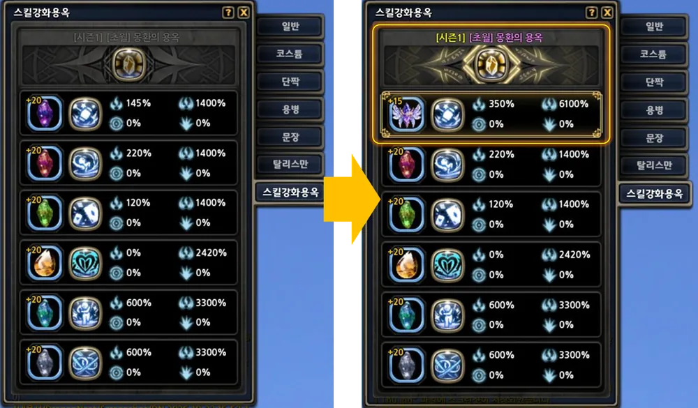
◆ 技能強化龍玉裝備欄位 - 開放第6欄◆ 스킬 강화 용옥 장착 슬롯 - 6번 개방
• 技能強化龍玉分頁共有6個欄位。• 스킬 강화 용옥 탭에는 총 6개의 슬롯이 존재합니다.
• 鎖定中的欄位使用貨幣解鎖後即可使用，且僅能在村莊內開放鎖定的欄位。• 잠겨있는 슬롯은 재화를 사용하여 잠금 해제 후 사용이 가능하며 잠긴 슬롯의 개방은 마을에서만 가능합니다.
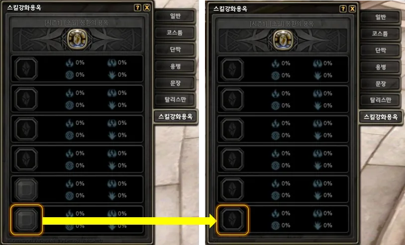
◆ [超越] 夢幻龍玉◆ [초월] 몽환의 용옥
• 新增新的技能強化龍玉——[超越] 夢幻龍玉。• 새로운 스킬 강화 용옥인 [초월] 몽환의 용옥이 추가됩니다.
• [超越] 夢幻龍玉從100等級起可裝備。• [초월] 몽환의 용옥은 100레벨부터 장착할 수 있습니다.
• 強化與現有夢幻龍玉相同的對象技能，且無法與現有夢幻龍玉同時裝備。• 기존 몽환의 용옥과 동일한 대상 스킬을 강화하며, 기존 몽환의 용옥과 동시에 장착할 수 없습니다.
◆ 獲得方式◆ 획득 방법
※ 偉業獎勵每個角色可獲得1次。※ 위업 보상은 캐릭터 당 1회 획득할 수 있습니다.
※ 以偉業獎勵獲得的龍玉無法交易。※ 위업 보상으로 획득한 용옥은 거래가 불가능합니다.
| 獲得處획득처 | 獲得道具획득 아이템 | 獲得方式획득 방식 |
|---|---|---|
| 滿潮迴廊만조의 회랑 | [超越] 夢幻龍玉[초월] 몽환의 용옥 | 依機率獲得各職業龍玉其中1個확률에 따라 직업별 용옥 중 1개 획득 |
| 滿潮迴廊 通關300次偉業만조의 회랑 300회 클리어 위업 | [超越] 夢幻龍玉(活動)[초월] 몽환의 용옥(이벤트) | 獲得自己職業的龍玉 1個본인 직업 용옥 1개 획득 |
| +16強化～+20強化 夢幻龍玉進化+16강 ~ +20강 몽환의 용옥 진화 | [超越] 夢幻龍玉[초월] 몽환의 용옥 | 獲得與現有夢幻龍玉相同的[超越] 夢幻龍玉 1個기존 몽환의 용옥과 동일한 [초월] 몽환의 용옥 1개 획득 |
◆ 技能強化龍玉欄位◆ 스킬 강화 용옥 슬롯
• 可使用滿潮洋流石與金幣開放第6個欄位。• 만조의 해류석과 골드를 사용하여 6번째 슬롯을 개방할 수 있습니다.
• 滿潮洋流石可於滿潮迴廊獵犬事件中獲得。• 만조의 해류석은 만조의 회랑 하운드 이벤트에서 획득할 수 있습니다.
| 開放欄位개방 슬롯 | 所需材料필요 재료 | 材料數量재료 개수 | 所需金幣필요 골드 |
|---|---|---|---|
| 第6個技能龍玉欄位6번째 스킬 용옥 슬롯 | 滿潮洋流石만조의 해류석 | 250個250개 | 100,000金幣100,000골드 |
◆ [超越] 夢幻龍玉◆ [초월] 몽환의 용옥
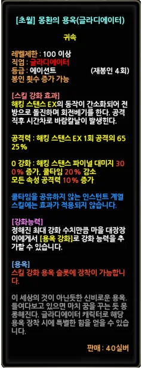
▶ [超越] 夢幻龍玉是強化與現有夢幻龍玉對象技能相同之技能的龍玉，僅限對應專屬職業的角色才能裝備該龍玉。▶ [초월] 몽환의 용옥은 기존 몽환의 용옥 대상 스킬과 동일한 스킬을 강화하는 용옥이며, 전용 직업에 해당하는 캐릭터만이 그 용옥을 장착할 수 있습니다.
▶ [超越] 夢幻龍玉自+0強化起，即套用最終傷害增加300%、冷卻時間減少20、所有屬性攻擊力增加10%的效果。▶ [초월] 몽환의 용옥은 0강화부터 파이널 대미지 300% 증가, 쿨타임 20 감소, 모든 속성 공격력 10% 증가 효과가 적용됩니다.
▶ [超越] 夢幻龍玉可進行強化，隨著「強化階段」提升，對象技能的最終傷害也會增加。▶ [초월] 몽환의 용옥은 강화 할 수 있으며 ‘강화 단계’가 올라감에 따라 대상 스킬의 파이널 대미지가 증가합니다
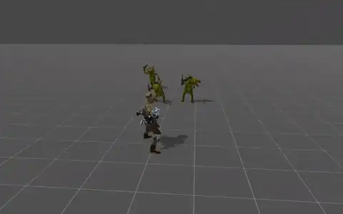
毀滅者 掠奪者디스트로이어 레이븐
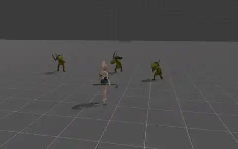
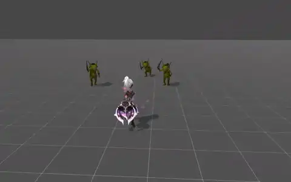
卡牌戲法師 喚靈使者링마스터 소울이터
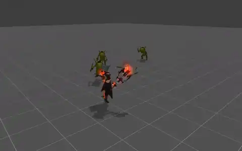
光影術士 十字軍스매셔 크루세이더
◆ [超越] 夢幻龍玉 強化對象技能◆ [초월] 몽환의 용옥 강화 대상 스킬
| 職業직업 | 強化對象技能강화 대상 스킬 |
|---|---|
| 劍鬥士글라디에이터 | 拔刀姿態 EX해킹 스탠스 EX |
| 月光劍豪문로드 | 半月斬 EX하프문 슬래쉬 EX |
| 狂戰士바바리안 | [覺醒] 重踏[각성] 스톰프 |
| 毀滅者디스트로이어 | 懲戒波 EX퍼니싱 스윙 EX |
| 闇黑復仇者다크어벤저 | [惡夢] 黑色刺針[악몽] 다크 스팅어 |
| 馭龍劍騎미스틱나이트 | 魔劍斬 EX뱅 소드 EX |
| 幻劍宗師그랜드마스터 | 大迴旋斬 EX (武器切換)스핀 드리프트 EX (웨폰체인지) |
| 悖論戰士패러독스워리어 | 三位一體攻擊트리니티 어택 |
| 天弓射手스나이퍼 | 聚能射擊차지 샷 聚能射擊 EX차지 샷 EX |
| 馭魔箭手아틸러리 | 疾風猛攻EX스위프트 스톰 EX |
| 影舞者템페스트 | 螺旋風暴 EX스파이럴 볼텍스 EX |
| 風行者윈드워커 | 螺旋踢 EX스파이럴 킥 EX |
| 銀月獵手실버헌터 | 箭雨齊發에리얼 와일드 샷 [神聖] 箭雨齊發[신성] 에리얼 와일드 샷 |
| 炎之幻姬셀레아나 | 地獄業火EX인페르노 EX |
| 冰之女王엘레스트라 | 冰原EX프리징 필드 EX |
| 光影術士스매셔 | 聚能激光 EX리니어 레이 EX |
| 時空領主마제스티 | 黑洞召喚 EX서먼 블랙홀 EX |
| 黑暗法師블랙마라 | [強化] 空虛盤旋[강화] 보이드 코일 |
| 聖騎士가디언 | 神聖復仇 EX디바인 벤전스 EX |
| 十字軍크루세이더 | 雷霆一擊 EX스마이트 EX |
| 聖徒세인트 | 神聖枷鎖 EX미스틱 체인 EX |
| 審判者인퀴지터 | [覺醒] 電光箭[각성] 라이트닝 볼트 |
| 黑暗異教徒아크헤러틱 | [噩夢]邪惡之手[악몽]이블 핸드 |
| 炮擊之星슈팅스타 | 火砲衝擊波EX캐논 블래스터 EX |
| 機甲司令기어마스터 | [覺醒] 機械寒冰噴射器[각성] 미케닉 아이스 펌프 |
| 鍊魔使어뎁트 | 冰拳衝擊EX아이스 펀치 EX |
| 鍊癒使피지션 | 注射器 EX인젝터 EX |
| 縱雷機師레이메카닉 | [進化] 原子翼刀[진] 아토믹 블레이드 [騎乘] 原子翼刀[탑승] 아토믹 블레이드 |
| 暗黑召喚師다크서머너 | 闇爪升龍擊EX체인 클로 EX |
| 喚靈使者소울이터 | 符鳥式神EX스피릿 페이퍼 EX |
| 劍刃舞者블레이드댄서 | 閃耀之舞EX트윙클 스핀 EX |
| 闇影支配者스피릿댄서 | 黎明之刃 EX제너럴 던블레이드 EX |
| 天羽神姬오라클엘더 | [神聖] 銳不可擋[신성] 샤프니스 오브 허리케인 |
| 撕裂者리퍼 | 火焰破壞者 EX플레임 로커스트 EX |
| 掠奪者레이븐 | 掌聲響起 EX어플러즈 EX [覺醒] 掌聲響起[각성] 어플러즈 |
| 光輝使者라이트퓨리 | 撼動查克拉 EX풀 브라이트 EX |
| 深淵行者어비스워커 | 離子爆裂 EX플라즈마 버스트 EX |
| 噬血闇靈블리드팬텀 | [殘酷] 危機四伏[크루얼] 솔 브레이커 |
| 疾風魅影플러리 | 螺旋刺 EX스탭 스크류 EX |
| 幻魔槍騎스팅브리저 | 凌空投擲 EX피어싱 스파이크 EX |
| 冰霜舞姬아발란체 | 前進突刺 EX게일 스탭 EX |
| 緋紅戰姬란드그리드 | 攻其不備 EX혼 레이드 EX |
| 闇夜魅影베나플라가 | [墮落]血箭[타락] 블러드 샷 |
| 捍衛者디펜시오 | 天外飛仙 EX리핑오버 EX |
| 破壞者루이나 | 波動穿刺 EX플로스루 EX |
| 疾光武姬임팩터 | L-破壞者 EXL-버스터 EX |
| 電光禦使러스터 | 雷射光刃 EX레이저 피어서 EX |
| 維斯蒂亞雷納비스티아 레이나 | 閃耀踢擊트윙클 킥 |
| 決鬥者듀얼리스트 | 氣刃 EX에어로 소드 EX |
| 陷阱大師트릭스터 | 絕對領域 EX클러치 필드 EX |
| 亡靈獵手레버넌트 | 一刀兩斷 EX컷 오프 EX |
| 獨行俠매버릭 | 致命吸引 EX클러 크레인 EX |
| 謫仙使성휘무제 | 玄影劍 (謫仙使顯現中)현영검 (성휘무제 현현 중) |
| 卡牌戲法師링마스터 | 啵啵皮唷포잉 피요 啵啵皮唷 瞬息萬變포잉 피요 인스턴트 |
▶ 部分職業的技能，在龍玉強化動作的同時會追加技能效果。▶ 일부 직업의 스킬은 용옥 액션 강화와 함께 스킬 효과가 추가됩니다.
◆ [超越] 夢幻龍玉 強化◆ [초월] 몽환의 용옥 강화
• [超越] 夢幻龍玉最高可強化至+15。• [초월] 몽환의 용옥은 최대 15강까지 강화할 수 있습니다.
• 使用夢境儀式與超越回流石作為強化材料。• 강화 재료로 꿈결의 의식과 초월의 환류석을 사용합니다.
• 夢境儀式及超越回流石可於擊敗滿潮迴廊首領時獲得。• 꿈결의 의식 및 초월의 환류석은 만조의 회랑 보스 처치 시 획득할 수 있습니다.
• 超越回流石從+6強化起作為強化材料使用。• 초월의 환류석은 6강부터 강화 재료로 사용됩니다.
| 強化階段강화 단계 | 強化機率강화 확률 | 所需金幣필요 골드 | 夢境儀式꿈결의 의식 | 超越回流石초월의 환류석 |
|---|---|---|---|---|
| 1 | 100% | 1,000 | 600個600개 | - |
| 2 | 100% | 1,000 | 800個800개 | - |
| 3 | 100% | 1,000 | 800個800개 | - |
| 4 | 100% | 1,000 | 1,000個1,000개 | - |
| 5 | 100% | 1,000 | 1,000個1,000개 | - |
| 6 | 50% | 1,000 | 800個800개 | 1個1개 |
| 7 | 30% | 1,000 | 800個800개 | 1個1개 |
| 8 | 20% | 1,000 | 600個600개 | 1個1개 |
| 9 | 15% | 1,000 | 600個600개 | 1個1개 |
| 10 | 10% | 1,000 | 600個600개 | 2個2개 |
| 11 | 5% | 1,000 | 500個500개 | 2個2개 |
| 12 | 5% | 1,000 | 500個500개 | 2個2개 |
| 13 | 4% | 1,000 | 500個500개 | 3個3개 |
| 14 | 3% | 1,000 | 500個500개 | 3個3개 |
| 15 | 2% | 1,000 | 500個500개 | 3個3개 |
◆ [超越] 夢幻龍玉 強化效果◆ [초월] 몽환의 용옥 강화 효과
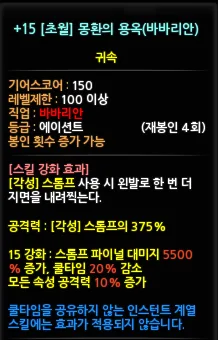
| 強化階段강화 단계 | 技能最終스킬 파이널 傷害增加대미지 증가 |
對象技能대상 스킬 冷卻時間減少쿨타임 감소 |
所有屬性모든 속성 攻擊力增加공격력 증가 |
|---|---|---|---|
| 0 | 300% | 20% | 10% |
| 1 | 425% | 20% | 10% |
| 2 | 550% | 20% | 10% |
| 3 | 675% | 20% | 10% |
| 4 | 800% | 20% | 10% |
| 5 | 1000% | 20% | 10% |
| 6 | 1200% | 20% | 10% |
| 7 | 1425% | 20% | 10% |
| 8 | 1675% | 20% | 10% |
| 9 | 1950% | 20% | 10% |
| 10 | 2250% | 20% | 10% |
| 11 | 2650% | 20% | 10% |
| 12 | 3150% | 20% | 10% |
| 13 | 3750% | 20% | 10% |
| 14 | 4500% | 20% | 10% |
| 15 | 5500% | 20% | 10% |
◆ [超越] 夢幻龍玉 分解◆ [초월] 몽환의 용옥 분해
• 可分解+0～+15強化的[超越] 夢幻龍玉。• 0~15강 [초월] 몽환의 용옥을 분해할 수 있습니다.
• 分解時，可依機率獲得下表獎勵中的其中1種。• 분해 시 아래 표의 보상 중 1종을 확률에 따라 획득할 수 있습니다.
| 分解對象분해 대상 | 獲得道具획득 아이템 | 數量개수 |
|---|---|---|
| [超越] 夢幻龍玉[초월] 몽환의 용옥 | 滿潮迴廊地圖만조의 회랑 지도 | 3個3개 |
| 滿潮迴廊地圖만조의 회랑 지도 | 15個15개 | |
| 無瑕之核무결의 핵 | 1個1개 | |
| [超越] 夢幻龍玉(活動)[초월] 몽환의 용옥(이벤트) | 滿潮迴廊地圖만조의 회랑 지도 | 3個3개 |
| 滿潮迴廊地圖만조의 회랑 지도 | 15個15개 |
◆ 新道具資訊◆ 신규 아이템 정보
| 道具아이템 | 交易거래 | 伺服器倉庫서버 창고 | 分解분해 |
|---|---|---|---|
| [超越] 夢幻龍玉[초월] 몽환의 용옥 | 封印時可交易(4次)봉인 시 가능(4회) | 封印時可交易(4次)봉인 시 가능(4회) | 可가능 |
| [超越] 夢幻龍玉(活動)[초월] 몽환의 용옥(이벤트) | 不可불가 | 不可불가 | 可가능 |
| 滿潮迴廊地圖만조의 회랑 지도 | 不可불가 | 不可불가 | 不可불가 |
| 夢境儀式꿈결의 의식 | 不可불가 | 不可불가 | 不可불가 |
| 滿潮洋流石만조의 해류석 | 不可불가 | 不可불가 | 不可불가 |
| 超越回流石초월의 환류석 | 不可불가 | 不可불가 | 不可불가 |
| 超越齒輪초월의 톱니바퀴 | 不可불가 | 不可불가 | 不可불가 |
| 超越鑰匙초월의 열쇠 | 不可불가 | 不可불가 | 不可불가 |
滿潮迴廊만조의 회랑
◆ 滿潮迴廊◆ 만조의 회랑
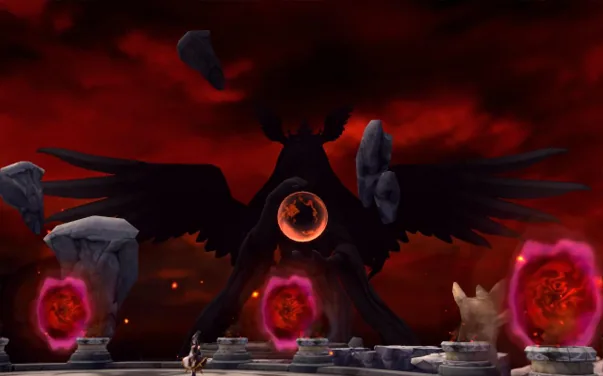
• 夕陽的紅光被染上更深的黑暗，將展開與變得更加強大的怪物之間的1對1死鬥。• 낙조의 붉은빛이 더욱 짙은 어둠으로 물들어, 한층 더 강력해진 몬스터들과의 1대 1 사투가 펼쳐집니다.
• 請戰勝變得更強的試煉，獲取更強力的材料吧。• 강해진 시련을 이겨내고 더욱 강력한 재료를 획득해 보세요.
◆ 滿潮迴廊 入場資訊◆ 만조의 회랑 입장 정보
• 可透過位於紅蓮宮街市的[時空裂縫]傳送門進入[滿潮迴廊]。• 홍련궁 저잣거리에 있는 [시공의 균열] 게이트를 이용해서 [만조의 회랑]에 입장할 수 있습니다.
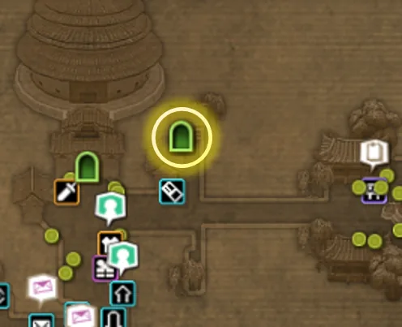
| 入場等級입장 레벨 | 100Lv以上100Lv 이상 |
|---|---|
| 可入場人數입장 가능 인원 | 1人1인 |
| 入場所需道具입장 시 필요 아이템 | 滿潮迴廊地圖만조의 회랑 지도 |
| 每週可通關次數주간 클리어 가능 횟수 | 無없음 |
| 一般復活可用次數일반 부활 가능 횟수 | 5次5회 |
◆ 滿潮迴廊 獎勵◆ 만조의 회랑 보상
• 可於滿潮迴廊獲得新的技能強化龍玉——[超越] 夢幻龍玉的相關道具。• 만조의 회랑에서 새로운 스킬 강화 용옥인 [초월] 몽환의 용옥 관련 아이템을 획득할 수 있습니다.
• 龍玉不分職業，隨機獲得1種。• 용옥은 직업 구분 없이 무작위 1종을 획득합니다.
| 獲得道具획득 아이템 | 內容내용 | 獲得處획득처 | 獲得方式획득 방식 |
|---|---|---|---|
| 夢境儀式꿈결의 의식 | 強化材料강화 재료 | 擊敗首領보스 처치 | 確定확정 |
| [超越] 夢幻龍玉[초월] 몽환의 용옥 | 技能強化龍玉스킬 강화 용옥 | 擊敗首領보스 처치 | 機率확률 |
| 超越回流石초월의 환류석 | 強化材料강화 재료 | 擊敗首領보스 처치 | 機率확률 |
| 滿潮洋流石만조의 해류석 | 技能龍玉欄位開放，스킬 용옥 슬롯 개방, 門票兌換입장권 교환 |
獵犬事件하운드 이벤트 | 確定확정 |
◆ 門票商店◆ 입장권 상점
• 次元商店與滿潮/夕陽迴廊商店中新增滿潮迴廊地圖。• 차원 상점과 만조/낙조의 회랑 상점에 만조의 회랑 지도가 추가됩니다.
| 商店상점 | 販售道具판매 아이템 | 所需貨幣필요 재화 | 購買限制구매 제한 |
|---|---|---|---|
| 次元商店차원 상점 | 滿潮迴廊地圖만조의 회랑 지도 | 沙漠氣息花苞 50個모래 숨결 꽃망울 50개 | 每角色每週50次캐릭터 당 주간 50회 |
| 滿潮/夕陽迴廊商店만조/낙조의 회랑 상점 | 滿潮迴廊地圖만조의 회랑 지도 | 滿潮洋流石 20個만조의 해류석 20개 | 每角色每週300次캐릭터 당 주간 300회 |
| 滿潮/夕陽迴廊商店만조/낙조의 회랑 상점 | 超越回流石초월의 환류석 | 無瑕之核 1個무결의 핵 1개 | 每角色每週3次캐릭터 당 주간 3회 |
| 滿潮/夕陽迴廊商店만조/낙조의 회랑 상점 | 超越齒輪초월의 톱니바퀴 | 無瑕之核 1個무결의 핵 1개 | - |
◆ 門票 每週任務獎勵◆ 입장권 주간 임무 보상
• 每週任務獎勵中新增滿潮迴廊地圖。• 주간 임무 보상에 만조의 회랑 지도가 추가됩니다.
| 每週任務주간 임무 | 追加獎勵추가 보상 |
|---|---|
| 達成每週委託6次주간 의뢰 6회 달성 | 滿潮迴廊地圖 15個만조의 회랑 지도 15개 |
◆ 稻香苑 大型採集◆ 도향원 대형 채집
• 於稻香苑關卡進行大型採集時，有一定機率獲得滿潮迴廊地圖。• 도향원 스테이지 대형 채집 시 만조의 회랑 지도를 일정 확률로 획득할 수 있습니다.
| 對象關卡대상 스테이지 | 追加獎勵추가 보상 |
|---|---|
| 軍團補給地군단 보급지 | 滿潮迴廊地圖 10個만조의 회랑 지도 10개 |
| 寒氣逼人的老街얼어붙은 시가지 | 滿潮迴廊地圖 10個만조의 회랑 지도 10개 |
| 赤岩谷廢墟적암곡 폐허 | 滿潮迴廊地圖 10個만조의 회랑 지도 10개 |
◆ 染血的根部 追加獎勵◆ 붉게 물든 뿌리굴 추가 보상
• 染血的根部獎勵中新增滿潮迴廊地圖。• 붉게 물든 뿌리굴 보상에 만조의 회랑 지도가 추가됩니다.
| 對象關卡대상 스테이지 | 追加獎勵추가 보상 |
|---|---|
| 染血的根部붉게 물든 뿌리굴 | 滿潮迴廊地圖 10個만조의 회랑 지도 10개 |
變更/追加 1변경/추가 1
分裂迷宮賽季變更 / 金龍巢穴變更 / 悖論冰晶龍巢穴變更 / 內容門票購買貨幣變更 / 銅鐵哥布林商店變更 / 婚禮任務簡化 / 其他
◆ 分裂迷宮 – 試煉深層 [賽季5 - 詛咒的深層]◆ 분열된 미로 – 시련의 심층 [시즌5 - 저주의 심층]
• 在分裂迷宮的深處，發現了殘酷到令勇者難以戰勝的詛咒深層。• 용자님들이 이겨내기 어려울 만큼 잔혹한 저주의 심층이 분열된 미로 깊숙한 곳에서 발견되었습니다.
| 入場難度입장 난이도 | 希望之花희망의 꽃 可復活次數부활 가능 횟수 |
消耗門票입장권 소모 | 中間關卡중간 관문 通關獎勵클리어 보상 |
套用試煉시련 적용 |
|---|---|---|---|---|
| 普通보통 | 10次10회 | - | - | - |
| 昇天神域 1樓 ～어센션 1층 ~ 昇天神域 2樓어센션 2층 |
5次5회 | 分裂的漩渦，1個분열의 소용돌이, 1개 | O | - |
| 昇天神域 3樓以上어센션 3층 이상 | 5次5회 | 分裂的漩渦，1個분열의 소용돌이, 1개 | O | O |
- 自分裂迷宮昇天神域3樓以上起，會套用使體力減少且喪失恢復能力的詛咒的深層。- 분열된 미로 어센션 3층 이상부터 체력이 감소하며 회복 능력이 사라져버리는 저주의 심층이 적용됩니다.
- 發現新的試煉深層時，賽季將會更換，套用的試煉也會隨之改變。- 새로운 시련의 심층이 발견 되면, 시즌이 변경되며 적용 되는 시련이 변경됩니다.
◆ 金龍巢穴 難度調降◆ 골드드래곤 네스트 난이도 하향
• 為了讓您能更無負擔地挑戰金龍巢穴，Normal、Hardcore的混沌迷宮樓層數將調降。• 골드드래곤 네스트에 보다 부담 없이 도전하실 수 있도록 Normal, Hardcore의 디멘션 층수가 하향됩니다.
• 變更後的混沌迷宮樓層數如下。• 변경되는 디멘션 층수는 아래와 같습니다.
| 對象關卡대상 던전 | 變更前변경 전 | 變更後변경 후 |
|---|---|---|
| 金龍巢穴골드드래곤 네스트 | 混沌迷宮 10樓디멘션 10층 | 混沌迷宮 9樓디멘션 9층 |
| 金龍巢穴 Hardcore골드드래곤 네스트 Hardcore | 混沌迷宮 10樓디멘션 10층 | 混沌迷宮 9樓디멘션 9층 |
• 隨著混沌迷宮樓層數調降，怪物的體力、攻擊力會降低，迷宮殺氣所造成的負擔也會減輕。• 디멘션 층수 하향에 따라 몬스터의 체력, 공격력이 낮아지며 라비린스 살기에 의한 부담이 감소합니다.
• 歡迎怪物的體力將維持在與原先相近的水準。• 웰컴 몬스터의 체력은 기존과 유사한 수준으로 유지됩니다.
• 配合變更後的混沌迷宮樓層數，金龍巢穴項目的說明將一併修正。• 변경된 디멘션 층수에 맞춰 골드드래곤 네스트 항목의 도움말이 수정됩니다.
• 金龍巢穴 Zero不在變更範圍內。• 골드드래곤 네스트 Zero는 변경되지 않습니다.
◆ 金龍巢穴 第2關◆ 골드드래곤 네스트 2관문
• 黑騎士威爾斯肯特的混沌的時間招式進行期間，無法召喚杰倫特。• 검은 기사 벨스커드의 혼돈의 시간 패턴 도중에는 제레인트를 소환할 수 없습니다.
◆ 金龍巢穴 門票購買限制擴大◆ 골드드래곤 네스트 입장권 구매 제한 확대
• 為了增加挑戰金龍巢穴的機會，將擴大門票購買限制。• 골드드래곤 네스트에 도전할 기회를 늘릴 수 있도록 입장권 구매 제한이 확대됩니다.
| 道具名稱아이템 명 | 變更前변경 전 | 變更後변경 후 |
|---|---|---|
| 金色羽毛금빛 깃털 | 2次2회 | 3次3회 |
| 強力的金色羽毛강렬한 금빛 깃털 | 2次2회 | 3次3회 |
◆ 悖論冰晶龍巢穴 入場方式變更◆ 패러독스 프로즌드래곤 네스트 입장 방식 변경
• 悖論冰晶龍巢穴變更為需要門票才能入場的方式。• 패러독스 프로즌드래곤 네스트가 입장권을 요구하는 방식으로 변경됩니다.
• 變更為通關關卡時增加通關次數。• 던전을 클리어했을 때 클리어 횟수가 증가하도록 변경됩니다.
• 以歡迎怪物模式入場時，同樣需要門票。• 웰컴 몬스터 모드로 입장할 때에도 입장권이 필요합니다.
• 變更為在歡迎怪物模式中，僅於開啟箱子時才會增加通關次數。• 웰컴 몬스터 모드에서 상자를 오픈할 때에만 클리어 횟수가 증가하도록 변경됩니다.
• 門票可於拉達梅斯 – 警備兵 馬克 – 悖論商店購買。• 입장권은 라다메스 – 경비병 마크 – 패러독스 상점에서 구매 가능합니다.
• Light難度門票：紅色霜花• Light 난이도 입장권 : 붉은 서리꽃
• Normal難度門票：悖論紅色霜花• Normal 난이도 입장권 : 모순의 붉은 서리꽃
| 內容컨텐츠 | 門票道具清單입장권 아이템 목록 | 購買貨幣구매 재화 | 購買限制구매 제한 |
|---|---|---|---|
| 悖論冰晶龍巢穴 Light패러독스 프로즌드래곤 Light | 紅色霜花붉은 서리꽃 | 次元的石榴石 25個차원의 잔흔 25개 | 每角色每週3次캐릭터 주간 3회 |
| 悖論冰晶龍巢穴 Normal패러독스 프로즌드래곤 Normal | 悖論紅色霜花모순의 붉은 서리꽃 | 次元的石榴石 25個차원의 잔흔 25개 | 每角色每週3次캐릭터 주간 3회 |
◆ 內容門票購買貨幣變更◆ 컨텐츠 입장권 구매 재화 변경
• 部分內容門票購買所需的貨幣種類已變更• 일부 컨텐츠 입장권 구매에 필요한 재화의 종류가 변경되었습니다
| 門票道具清單입장권 아이템 목록 | 原有貨幣기존 재화 | 變更後貨幣변경 재화 |
|---|---|---|
| 冷冰冰的迷霧蘑菇서리 낀 안개버섯 | 高級石榴石상급 가넷 | 次元的石榴石차원의 잔흔 |
| 冷冰冰的黑檀珠차가운 흑단 구슬 | 高級石榴石상급 가넷 | 次元的石榴石차원의 잔흔 |
| 艾德里的日誌碎片알드릭의 조각난 일지 | 高級生命淨水상급 생명의 정수 | 次元的石榴石차원의 잔흔 |
| 最後的冰霜花마지막 서리꽃 | 青金石청금석 | 次元的石榴石차원의 잔흔 |
| 被解放的最後冰霜花해방된 마지막 서리꽃 | 青金石청금석 | 次元的石榴石차원의 잔흔 |
| 被污染的黑網오염된 칠흑의 그물 | 高級石榴石상급 가넷 | 次元的石榴石차원의 잔흔 |
| 一次性傳送器일회용 전송기 | 青金石청금석 | 次元的石榴石차원의 잔흔 |
| 超越傳送器초월 전송기 | 青金石청금석 | 次元的石榴石차원의 잔흔 |
| 放電的傳送器방전된 전송기 | 青金石청금석 | 次元的石榴石차원의 잔흔 |
| 方舟卡片鑰匙방주 카드키 | 高級生命淨水상급 생명의 정수 | 次元的石榴石차원의 잔흔 |
| 寒冰噩夢碎片악몽의 얼어붙은 파편 | 惡夢的碎片악몽의 조각 | 次元的石榴石차원의 잔흔 |
| 金獸人的召喚書김오크의 소환장 | 伯剋霍的心臟碎片벌크홉의 심장 조각 | 次元的石榴石차원의 잔흔 |
| 植物館館長檢舉書식물갤의 고발장 | 亡靈的珠子碎片무에르토스의 구슬 조각 | 次元的石榴石차원의 잔흔 |
| 搜查委託書 : 颱風金的府邸수색 의뢰장 : 타이푼 킴의 저택 | 布倫希爾德的冰晶碎片브륀힐드의 얼음 조각 | 次元的石榴石차원의 잔흔 |
| 搜索委託書：大主教的冰窖수색 의뢰장 : 아크비숍의 석빙고 | 布倫希爾德的冰晶碎片브륀힐드의 얼음 조각 | 次元的石榴石차원의 잔흔 |
| 時空跳躍體시공간 도약체 | 高級生命淨水상급 생명의 정수 | 次元的石榴石차원의 잔흔 |
◆ 唉呀呀女神大人商店結束營運◆ 어이쿠 여신님 상점 종료
• 唉呀呀女神大人商店即將結束營運。• 어이쿠 여신님 상점이 종료됩니다.
• 剩餘的唉呀呀女神大人點數，在2027年2月更新前，可於[黃金哥布林的甜蜜商店]兌換為其他點數。• 잔여 어이쿠 여신님 포인트는 2027년 2월 업데이트 전까지 [황블이의 꿀 뚝뚝 상점]에서 다른 포인트로 교환 가능합니다.
| 日程일정 | 內容내용 |
|---|---|
| 2026年11月5日（四）維護2026년 11월 5일(목) 점검 | [唉呀呀女神大人商店] 結束營運[어이쿠 여신님 상점] 종료 |
| 11月5日（四）維護後 ～11월 5일(목) 점검 후 ~ 2027年2月更新維護前2027년 2월 업데이트 점검 전 |
於[黃金哥布林的甜蜜商店]將「唉呀呀女神大人點數」[황블이의 꿀 뚝뚝 상점]에서 '어이쿠 여신님 포인트'를 可兌換為「銅鐵哥布林的可疑點數」或「黃金哥布林的甜蜜點數」'동블이의 수상한 포인트' 또는 '황블이의 꿀 뚝뚝 포인트'로 교환 가능 |
| 2027年2月更新維護2027년 2월 업데이트 점검 | 點數兌換功能結束，並將剩餘的「唉呀呀女神大人點數」포인트 교환 기능 종료 및 잔여 '어이쿠 여신님 포인트'를 一律轉換為「銅鐵哥布林的可疑點數」'동블이의 수상한 포인트'로 일괄 전환 |
• 2027年2月更新時，將一律轉換為「銅鐵哥布林的可疑點數」，• 2027년 2월 업데이트 시 '동블이의 수상한 포인트'로 일괄 전환되오니,
希望兌換為「黃金哥布林的甜蜜點數」的勇者，請務必於兌換期間內使用。'황블이의 꿀 뚝뚝 포인트'로 교환읠 희망하시는 용자님께선 반드시 교환 기간 내 이용해주시기 바랍니다.
◆ 銅鐵哥布林商店變更◆ 동블이 상점 변경
• 銅鐵哥布林的可疑點數商店的商品將進行變更及新增。• 동블이의 수상한 포인트 상점 구성품이 변경 및 추가됩니다.
• 銅鐵哥布林的寶物分頁• 동블이의 보물 탭
| 販售道具판매 아이템 | 數量수량 | 所需點數필요 포인트 | 購買限制구매 제한 |
|---|---|---|---|
| 骨龍燃燒的心臟(無法交易)고룡의 불타는 심장(거래 불가) | 1個1개 | 30,000 | 每世界30天1次월드당 30일 1회 |
| 自然進化加速器자연 진화 가속기 | 1個1개 | 15,000 | 每世界30天1次월드당 30일 1회 |
| 骨龍的骨片고룡의 골편 | 20個20개 | 1,000 | 每世界每週1次월드 주간 1회 |
| 裝滿未知氣息的瓶子미지의 기운이 담긴 병 | 1個1개 | 3,000 | 每世界每週1次월드 주간 1회 |
| 變異型龍玉進化器 ver.3(無法交易)변이형 용옥 진화기 ver.3(거래불가) | 1個1개 | 7,500 | 每世界每週2次월드 주간 2회 |
| 時間寶石選擇袋시간의 보석 선택 주머니 | 1個1개 | 3,000 | 每世界每週1次월드 주간 1회 |
| 潛在的千人隊長印章잠재된 천인대장의 인장 | 1個1개 | 25,000 | 每世界每週1次월드 주간 1회 |
| 潛在的黑色戒指懲罰者印章잠재된 검은반지 퍼니셔의 인장 | 1個1개 | 20,000 | 每世界每週1次월드 주간 1회 |
| 潛在的恩加託 軍團長印章잠재된 엔가타 군단장의 인장 | 1個1개 | 15,000 | 每世界每週1次월드 주간 1회 |
| 潛在的百人隊長印章잠재된 백인대장의 인장 | 1個1개 | 10,000 | 每世界每週1次월드 주간 1회 |
| 永恆的盼望的碎片영원한 갈망의 파편 | 5個5개 | 2,000 | 每世界每週1次월드 주간 1회 |
| 永劫的渴望碎片영겁의 갈망의 파편 | 5個5개 | 2,000 | 每世界每週1次월드 주간 1회 |
| 夢之盡頭 主武器/副武器(無法交易)꿈의 끝 주무기/보조무기(거래불가) 選擇袋선택 주머니 |
1個1개 | 2,000 | 每世界每週1次월드 주간 1회 |
| 巴武帕被破壞的喇叭바오파의 파괴된 나팔 | 1個1개 | 1,000 | 每世界每週5次월드 주간 5회 |
| 汶巴拉被破壞的槌子움발라의 파괴된 망치 | 1個1개 | 1,000 | 每世界每週5次월드 주간 5회 |
| 梅盧卡被破壞的靈魂멜루카의 파괴된 영혼 | 1個1개 | 1,000 | 每世界每週5次월드 주간 5회 |
| 蒂塔尼溫被破壞的能量티타니온의 파괴된 에너지 | 1個1개 | 1,000 | 每世界每週5次월드 주간 5회 |
| 墮落的黑龍記憶타락한 흑룡의 기억 | 100個100개 | 500 | 無限制제한 없음 |
• 銅鐵哥布林的貴重物品分頁• 동블이의 귀중품 탭
| 販售道具판매 아이템 | 數量수량 | 所需點數필요 포인트 | 購買限制구매 제한 |
|---|---|---|---|
| 扎根盼望的碎片뿌리 깊은 갈망의 파편 | 20個20개 | 2,000 | 每世界每週1次월드 주간 1회 |
| 扭曲的根뒤틀린 뿌리 | 10個10개 | 2,000 | 每世界每週1次월드 주간 1회 |
| 形狀不明的古代根源모양을 알 수 없는 고대인의 근원 | 1個1개 | 5,000 | 每世界每週2次월드 주간 2회 |
| 噩夢之邀請函악몽의 초대장 | 1個1개 | 3,000 | 每世界每週1次월드 주간 1회 |
| 龍鱗加工板용 비늘 세공판 | 1個1개 | 2,000 | 每世界每週1次월드 주간 1회 |
| 混濁的希望탁한 희망 | 20個20개 | 2,000 | 每世界每週1次월드 주간 1회 |
| 月蝕聖痕월식의 성흔 | 200個200개 | 500 | 無限制제한 없음 |
| 月蝕寶玉上古選擇袋子월식 보옥 에이션트 선택 주머니 | 1個1개 | 1,500 | 每世界每週4次월드 주간 4회 |
| 月蝕龍玉傳奇選擇袋子월식의 용옥 레전드 선택 주머니 | 1個1개 | 500 | 每世界每週10次월드 주간 10회 |
| 古代人的圖紙碎片고대인의 도면 조각 | 75個75개 | 500 | 每世界每週5次월드 주간 5회 |
| 卓越的古代智慧뛰어난 고대의 지혜 | 100個100개 | 500 | 每世界每週5次월드 주간 5회 |
| 金蓮寶금련보 | 500個500개 | 500 | 每世界每週20次월드 주간 20회 |
| 次元的氣息차원의 기운 | 1個1개 | 2,000 | 每世界每週1次월드 주간 1회 |
| 引導之星길잡이 별 | 1個1개 | 1,000 | 每世界每週2次월드 주간 2회 |
| 凝聚的次元的氣息응축된 차원의 기운 | 1個1개 | 500 | 無限制제한 없음 |
| 永恆的強化紋章(史詩) 隨機袋子영원한 강화문장(에픽) 랜덤 주머니 | 1個1개 | 500 | 每世界每週2次월드 주간 2회 |
| 永恆的托利斯曼(2階段)選擇袋子영원한 탈리스만(2단계) 선택 주머니 | 1個1개 | 500 | 每世界每週2次월드 주간 2회 |
| 四季寶石選擇袋계절의 보석 선택 주머니 | 1個1개 | 3,000 | 每世界每週1次월드 주간 1회 |
| 次元的地圖碎片차원의 지도 조각 | 50個50개 | 500 | 無限制제한 없음 |
| 永恆的次元標誌영원한 차원의 징표 | 50個50개 | 500 | 無限制제한 없음 |
• 銅鐵哥布林的雜物分頁• 동블이의 잡동사니 탭
| 販售道具판매 아이템 | 數量수량 | 所需點數필요 포인트 | 購買限制구매 제한 |
|---|---|---|---|
| 高級石榴石상급 가넷 | 100個100개 | 500 | 每世界每日1次월드 일일 1회 |
| 高級生命淨水상급 생명의 정수 | 100個100개 | 500 | 每世界每日1次월드 일일 1회 |
| 伯剋霍‧亡靈‧布倫希爾德 材料袋벌무브 재료 주머니 | 1個1개 | 500 | 每角色每日1次캐릭터 일일 1회 |
| 伯剋霍‧亡靈‧布倫希爾德 高級材料袋벌무브 상급 재료 주머니 | 1個1개 | 1,000 | 每角色每日1次캐릭터 일일 1회 |
| 未知的古代飾品碎片미지의 고대 액세서리 파편 | 50個50개 | 500 | 無限制제한 없음 |
| 古代人知識고대인의 지식 | 100個100개 | 500 | 無限制제한 없음 |
| 古代人紋樣고대인의 문양 | 1,000個1,000개 | 500 | 無限制제한 없음 |
| 時空石[強風]시공의 돌[강풍] | 1個1개 | 500 | 每角色每日1次캐릭터 일일 1회 |
| 尊爵VIP兌換道具프리미엄 VIP 쿠폰 아이템 | 1個1개 | 2,000 | 每角色30天1次캐릭터당 30일 1회 |
| 新手救星쾌적한 프리미엄 혜택 | 1個1개 | 100 | 每角色30天1次캐릭터당 30일 1회 |
| 生命之古代頭盔碎片생명의 고대 투구 파편 | 100個100개 | 500 | 無限制제한 없음 |
| 東方之古代上衣碎片동방의 고대 상의 파편 | 100個100개 | 500 | 無限制제한 없음 |
| 拂曉之古代下裝碎片여명의 고대 하의 파편 | 100個100개 | 500 | 無限制제한 없음 |
| 叢林之古代手套碎片정글의 고대 장갑 파편 | 100個100개 | 500 | 無限制제한 없음 |
| 深淵之古代鞋子碎片심연의 고대 신발 파편 | 100個100개 | 500 | 無限制제한 없음 |
| 異世界的古代武器碎片이세계의 고대 무기 파편 | 50個50개 | 500 | 無限制제한 없음 |
◆ 新道具內容物◆ 신규 아이템 구성품
| 袋子주머니 | 內容物구성품 | 獲得數量획득 수량 |
|---|---|---|
| 時間寶石選擇袋시간의 보석 선택 주머니 | 黎明露光寶石새벽의 이슬빛 보석 | 5個5개 |
| 時間寶石選擇袋시간의 보석 선택 주머니 | 正午陽光寶石정오의 태양빛 보석 | 10個10개 |
| 時間寶石選擇袋시간의 보석 선택 주머니 | 黃昏晚霞寶石황혼의 노을빛 보석 | 100個100개 |
| 時間寶石選擇袋시간의 보석 선택 주머니 | 午夜流星寶石자정의 유성빛 보석 | 200個200개 |
| 伯剋霍‧亡靈‧布倫希爾德 材料袋벌무브 재료 주머니 | 伯剋霍的心臟碎片벌크홉의 심장 조각 | 1,000個1,000개 |
| 伯剋霍‧亡靈‧布倫希爾德 材料袋벌무브 재료 주머니 | 亡靈的珠子碎片무에르토스의 구슬 조각 | 1,000個1,000개 |
| 伯剋霍‧亡靈‧布倫希爾德 材料袋벌무브 재료 주머니 | 布倫希爾德的冰晶碎片브륀힐드의 얼음 조각 | 1,000個1,000개 |
| 伯剋霍‧亡靈‧布倫希爾德 高級材料袋벌무브 상급 재료 주머니 | 伯剋霍之力벌크홉의 힘 | 5個5개 |
| 伯剋霍‧亡靈‧布倫希爾德 高級材料袋벌무브 상급 재료 주머니 | 亡靈的魔力무에르토스의 마력 | 5個5개 |
| 伯剋霍‧亡靈‧布倫希爾德 高級材料袋벌무브 상급 재료 주머니 | 布倫希爾德的面具브륀힐드의 가면 | 5個5개 |
| 道具아이템 | 交易거래 | 伺服器倉庫서버창고 |
|---|---|---|
| 時間寶石選擇袋시간의 보석 선택 주머니 | 不可불가 | 不可불가 |
| 伯剋霍‧亡靈‧布倫希爾德 材料袋벌무브 재료 주머니 | 不可불가 | 不可불가 |
| 伯剋霍‧亡靈‧布倫希爾德 高級材料袋벌무브 상급 재료 주머니 | 不可불가 | 不可불가 |
◆ 婚禮任務簡化◆ 언약 퀘스트 간소화
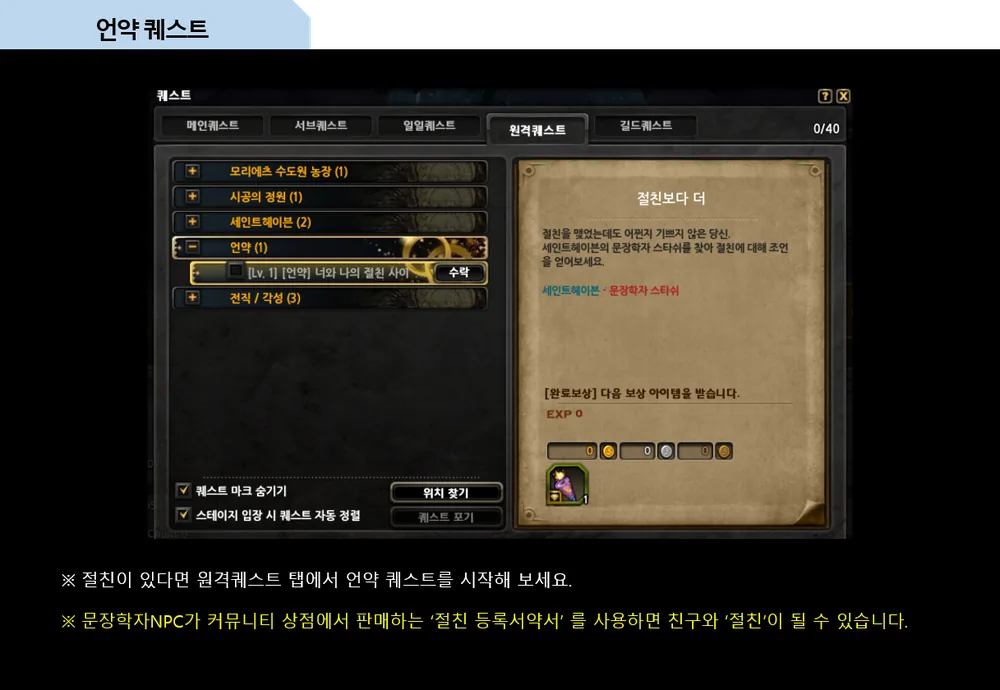
◆ 自動獲得古代的力量任務◆ 고대의 힘 퀘스트 자동 획득
▶ 今後完成英雄技能任務時，將自動獲得古代的力量任務。▶ 앞으로 영웅 스킬 퀘스트 완료 시 고대의 힘 퀘스트를 자동으로 획득합니다.
◆ 戰鬥修練場 怪物體力調升◆ 전투 수련장 몬스터 체력 상향
▶ 已配合勇者們的實力，調升戰鬥修練場怪物的體力。敬請多加利用。▶ 전투 수련장 몬스터의 체력을 용사님들의 강함에 맞추어 상향하였습니다. 많은 이용 부탁드립니다.
◆ 新增次元經驗值關卡◆ 차원 경험치 스테이지 추가
• 通關方舟墜落地點關卡時，可獲得次元經驗值。• 방주 추락 지점 스테이지 클리어 시 차원 경험치를 획득할 수 있습니다.
變更/追加 2변경/추가 2
聖誕夜哥淑箱子 / 神聖・墮落的壺
◆ 聖誕夜哥淑箱子◆ 크리스마스 이브 고숙이 상쟈
• 值此年末，新增聖誕夜哥淑箱子。• 연말을 맞아 크리스마스 이브 고숙이 상쟈가 추가됩니다.
• 可使用陳年鑰匙1個開啟。• 손때 묻은 열쇠 1개를 사용하여 개봉할 수 있습니다.
• 獲得方式• 획득 방법
| 獲得處획득처 | 獲得道具획득 아이템 | 數量수량 |
|---|---|---|
| 擊敗異界龍玉侵略者이계의 용옥 침략자 처치 | 聖誕夜哥淑箱子크리스마스 이브 고숙이 상쟈 | 3個3개 |
| 擊敗稻香苑關卡安息處도향원 스테이지 안식처 처치 | 聖誕夜哥淑箱子크리스마스 이브 고숙이 상쟈 | 5個或15個5개 또는 15개 |
• 開啟箱子後，可獲得以下內容物中的其中1種。• 상자를 열면 아래 구성품 중 1종을 획득할 수 있습니다.
• 依據韓國《遊戲產業振興法》，公開的機率為四捨五入（或無條件捨去）後的數值，總和可能不等於100%。• 공개된 확률은 게임산업진흥에 관한 법률에 따라 반올림 (또는 내림)한 값으로 총 합산이 100%가 아닐 수 있습니다.
| 道具名稱아이템명 | 數量수량 | 獲得機率획득 확률 | 交易거래 |
|---|---|---|---|
| 神聖/墮落的壺 選擇袋신성/타락의 항아리 선택 주머니 | 1個1개 | 0.0200% | 可가능 |
| 永恆的托利斯曼(5階段)(活動)選擇袋子영원한 탈리스만(5단계)(이벤트) 선택 주머니 | 1個1개 | 0.0050% | 不可불가 |
| 艾奥娜飾品選擇箱子아이오나 악세서리 선택 상자 | 1個1개 | 0.0300% | 可가능 |
| [20% 機率] 冰凝槌子 (~+4)[20% 확률] 차가움이 서린 망치 (~+4강) | 1個1개 | 0.7500% | 可가능 |
| [20% 機率] 冰凝槌子 (+5~+9)[20% 확률] 차가움이 서린 망치 (+5~+9강) | 1個1개 | 0.5000% | 可가능 |
| 金光誓言금빛 서약 | 1個1개 | 0.0700% | 不可불가 |
| 無瑕之核무결의 핵 | 1個1개 | 0.8000% | 可가능 |
| 稱號：聖誕老人的好秘友칭호 : 산타의 비밀친구 | 1個1개 | 1.5000% | 可가능 |
| 稱號：騎著馴鹿到處跑的칭호 : 순록을 타고 다니는 | 1個1개 | 2.0000% | 可가능 |
| 稱號：神奇哥淑칭호 : 갓고숙이 | 1個1개 | 0.0100% | 可가능 |
| 稱號：哥淑大法師칭호 : 대고숙이 | 1個1개 | 0.0100% | 可가능 |
| 稱號：超級哥淑칭호 : 초고숙이 | 1個1개 | 0.0200% | 可가능 |
| 永劫的變異型龍玉進化器영겁의 변이형 용옥 진화기 | 1個1개 | 0.0300% | 可가능 |
| 永劫的異界變異型龍玉영겁의 이계의 변이형 용옥 | 1個1개 | 1.0000% | 封印時可交易봉인 시 가능 |
| 永恆的托利斯曼(4階段) 選擇袋영원한 탈리스만(4단계) 선택 주머니 | 1個1개 | 0.2000% | 不可불가 |
| 天界的碎塊천계의 파편 | 1個1개 | 6.5000% | 不可불가 |
| 天界的碎塊천계의 파편 | 2個2개 | 3.2500% | 不可불가 |
| 胸針鉤環브로치 고리 | 1個1개 | 10.0000% | 不可불가 |
| 胸針鉤環브로치 고리 | 2個2개 | 5.0000% | 不可불가 |
| 滿潮迴廊地圖만조의 회랑 지도 | 3個3개 | 6.0000% | 不可불가 |
| 滿潮迴廊地圖袋子(可交易)만조의 회랑 지도 주머니(거래 가능) | 1個1개 | 1.0000% | 可가능 |
| 高級盼望的碎片상급 갈망의 파편 | 40個40개 | 1.5000% | 不可불가 |
| 永劫的渴望碎片영겁의 갈망의 파편 | 1個1개 | 15.0000% | 不可불가 |
| 永劫的渴望碎片영겁의 갈망의 파편 | 3個3개 | 3.0000% | 不可불가 |
| 秩序代幣질서의 토큰 | 1個1개 | 10.0000% | 不可불가 |
| 秩序代幣질서의 토큰 | 5個5개 | 2.0000% | 不可불가 |
| 古代人的圖紙고대인의 도면 | 10個10개 | 10.0000% | 可가능 |
| 卓越的古代智慧뛰어난 고대의 지혜 | 500個500개 | 3.0000% | 不可불가 |
| 混濁的希望탁한 희망 | 10個10개 | 2.5000% | 不可불가 |
| 混濁的希望탁한 희망 | 20個20개 | 2.0000% | 不可불가 |
| 龍鱗加工板용 비늘 세공판 | 3個3개 | 1.0000% | 不可불가 |
| 龍鱗加工板용 비늘 세공판 | 5個5개 | 0.6600% | 不可불가 |
| 扭曲的根뒤틀린 뿌리 | 20個20개 | 1.0000% | 不可불가 |
| 扭曲的根뒤틀린 뿌리 | 50個50개 | 0.4000% | 不可불가 |
| 受到祝福的金色森嚴的強化紋章축복받은 금빛 철벽의 강화문장 | 1個1개 | 0.0020% | 封印時可交易봉인 시 가능 |
| 受到祝福的金色帳幕的強化紋章축복받은 금빛 장막의 강화문장 | 1個1개 | 0.0020% | 封印時可交易봉인 시 가능 |
| 受到祝福的金色致命的強化紋章축복받은 금빛 치명의 강화문장 | 1個1개 | 0.0020% | 封印時可交易봉인 시 가능 |
| 受到祝福的金色極限的強化紋章축복받은 금빛 한계의 강화문장 | 1個1개 | 0.0020% | 封印時可交易봉인 시 가능 |
| 裝在瓶中的石化者병에 담긴 석화자 | 1個1개 | 0.4000% | 不可불가 |
| 祝福的黑龍的古代元素特殊托利斯曼袋子축복받은 흑룡의 고대원소 특수 탈리스만 주머니 | 1個1개 | 0.0010% | 不可불가 |
| 變形進化加速器변형 진화 가속기 | 1個1개 | 0.0080% | 可가능 |
| 凝聚骨龍力量的防具強化鎚 (+14)고룡의 힘이 깃든 방어구 강화 망치 (+14강) | 1個1개 | 0.0010% | 封印時可交易봉인 시 가능 |
| 凝聚骨龍力量的武器強化鎚 (+14)고룡의 힘이 깃든 무기 강화 망치 (+14강) | 1個1개 | 0.0010% | 封印時可交易봉인 시 가능 |
| 受祝福的杰倫特的成長축복받은 제레인트의 성장 | 1個1개 | 0.0010% | 封印時可交易봉인 시 가능 |
| 哥淑幣고숙이 코인 | 1個1개 | 8.8250% | 不可불가 |
◆ 新稱號◆ 신규 칭호
• 可從聖誕夜哥淑箱子獲得2種新的替代稱號。• 크리스마스 이브 고숙이 상쟈에서 신규 커버 칭호 2종을 획득할 수 있습니다.
| 稱號種類칭호 종류 | 稱號名稱칭호명 | 稱號道具交易칭호 아이템 거래 |
|---|---|---|
| 替代稱號커버 칭호 | 聖誕老人的好秘友산타의 비밀친구 | 可가능 |
| 替代稱號커버 칭호 | 騎著馴鹿到處跑的순록을 타고 다니는 | 可가능 |
◆ 新增神聖/墮落的壺◆ 신성/타락의 항아리 추가
• 新增可變更符文道具選項範圍的神聖/墮落的壺。• 룬 아이템의 옵션 범위를 변경하는 신성/타락의 항아리가 신규 추가 되었습니다.
• 使用墮落的壺時，凍結符文（第10階段確定）（上古）等級的第2個選項可出現的選項，將變更為與第1個選項的技能範圍相同。• 타락의 항아리 사용 시 얼어붙은 룬(10단계 확정)(에이션트) 등급의 2번째 옵션의 등장 옵션이 1번째 옵션의 스킬 범위와 동일하게 변경됩니다.
• 使用神聖的壺時，凍結符文（第10階段確定）（上古）等級的第3個選項可出現的選項，將變更為與第1個選項的技能範圍相同。• 신성의 항아리 사용 시 얼어붙은 룬(10단계 확정)(에이션트) 등급의 3번째 옵션의 등장 옵션이 1번째 옵션의 스킬 범위와 동일하게 변경됩니다.
• 第1個選項的技能範圍（各2轉職業指定技能）• 1번째 옵션 스킬 범위(2차 전직 별 지정 스킬)
• 職業精通3技能• 클래스 마스터리3 스킬
• 終極技能• 궁극기 스킬
• 2轉50等 EX技能• 2차 50제 EX 스킬
• 主力技能• 주력 스킬
• 輔助技能• 보조 스킬
• 技能最終傷害增加效果範圍• 스킬 파이널데미지 증가 효과 범위
• 182% ~ 257%
• 使用墮落的壺時，原符文的第1個、第3個選項將會保留。• 타락의 항아리 사용 시 기존 룬의 1번째, 3번째 옵션은 유지됩니다.
• 使用神聖的壺時，原符文的第1個、第2個選項將會保留。• 신성의 항아리 사용 시 기존 룬의 1번째, 2번째 옵션은 유지됩니다.
• 神聖/墮落的壺僅可用於上古等級、第10階段確定的凍結符文。• 신성/타락의 항아리는 에이션트 등급, 10단계 확정, 얼어붙은 룬에만 사용이 가능합니다.
• 可於使用墮落的壺後再使用神聖的壺／使用神聖的壺後再使用墮落的壺。• 타락의 항아리 사용 후 신성의 항아리 사용 / 신성의 항아리 사용 후 타락의 항아리 사용이 가능합니다.
• 使用神聖/墮落的壺後，對象道具的方舟之力使用費用將會改變。• 신성/타락의 항아리 사용 후 대상 아이템의 방주의 힘 사용 비용이 변경됩니다.
• 神聖/墮落的壺可使用伺服器倉庫。• 신성/타락의 항아리는 서버 창고 이용이 가능합니다.
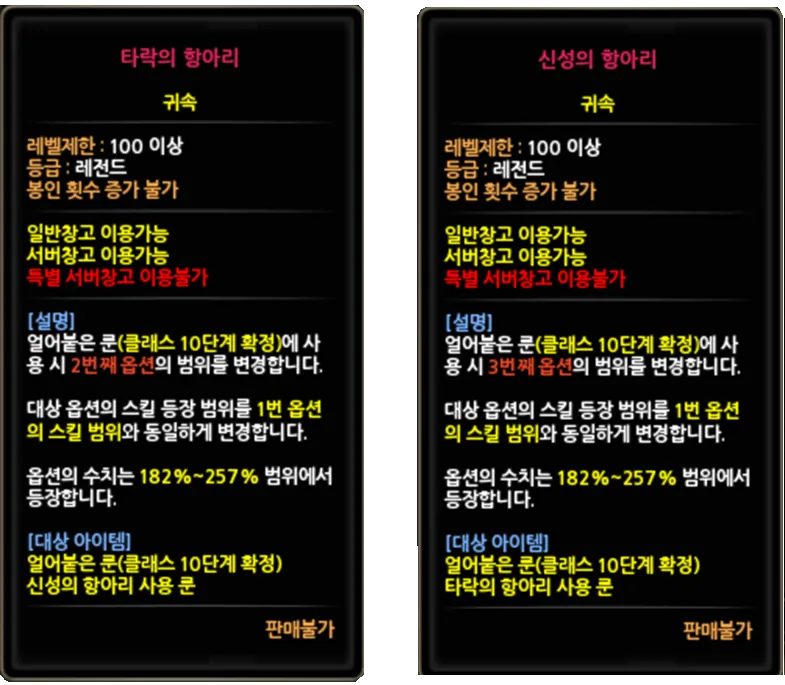
◆ 神聖/墮落的壺 製作◆ 신성/타락의 항아리 제작
• 可於鐵匠 – [鐵匠舖交易] – [道具製作] – [符文/根源] – [符文] – [壺] 中製作。• 대장장이 – [대장간 거래] – [아이템 제작] – [룬, 근원] – [룬] – [항아리]에서 제작이 가능합니다.
• 製作神聖/墮落的壺需要天界的碎塊100個與10萬金幣。• 신성/타락의 항아리 제작을 위해서는 천계의 파편 100개와 10만 골드가 필요합니다.
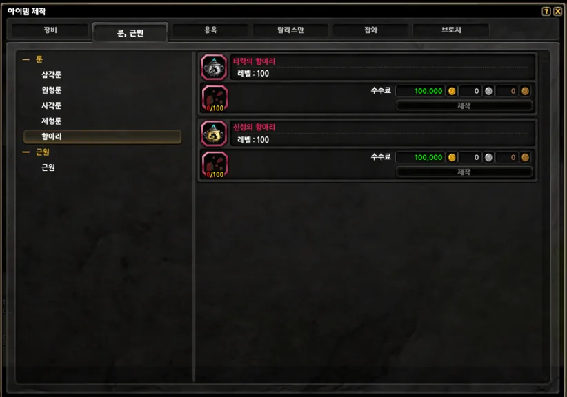
角色平衡캐릭터 밸런스
◆ 炮擊之星◆ 슈팅스타
配合[超越] 夢幻龍玉的更新，為了讓龍玉對象技能火砲衝擊波在使用EX時的體驗不受影響，[초월] 몽환의 용옥 업데이트에 맞춰서 용옥 대상스킬인 캐논 블래스터를 EX 의 사용 경험에 패널티가 없도록 하기 위하여
將火砲衝擊波配置為EX技能，並將乒乓連擊配置為覺醒技能。캐논 블래스터를 EX 스킬로 배치하고, 핑퐁 밤을 각성 스킬로 배치하였습니다.
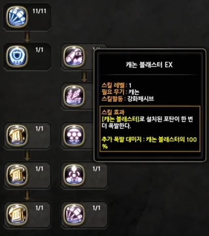
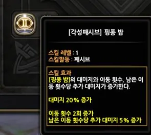
▷ 乒乓連擊EX▷ 핑퐁 밤 EX
• 該技能已移除。• 스킬이 제거되었습니다.
• 「乒乓連擊」改為在覺醒習得階段強化，而非EX習得階段。• ‘핑퐁 밤’은 EX 습득 단계 가 아닌 각성 습득 단계에서 강화됩니다.
▷ [覺醒] 火砲衝擊波▷ [각성] 캐논 블래스터
• 該技能已移除。• 스킬이 제거되었습니다.
• 「火砲衝擊波」改為在EX習得階段強化，而非覺醒習得階段。• ‘캐논 블래스터＇는 각성 습득 단계가 아닌 EX 습득 단계에서 강화됩니다.
▷ 火砲衝擊波▷ 캐논 블래스터
• 冷卻時間變更為最多可儲存2次。• 재사용 대기시간이 2회까지 저장되도록 변경되었습니다.
▷ 火砲衝擊波EX▷ 캐논 블래스터 EX
• 已新增該技能。• 스킬이 추가되었습니다.
• 使用技能時獲得英雄格線。• 스킬 사용 시 영웅 게이지를 획득합니다.
• 效果與原有的「[覺醒] 火砲衝擊波」相同。• 효과는 기존 ‘[각성] 캐논 블래스터’와 동일하게 적용됩니다.
• 以[火砲衝擊波]設置的砲彈會再爆炸一次。• [캐논 블래스터]로 설치된 포탄이 한 번 더 폭발한다.
追加爆炸傷害：火砲衝擊波的100%추가 폭발 대미지 : 캐논 블래스터의 100%
▷ [覺醒被動] 乒乓連擊▷ [각성패시브] 핑퐁 밤
• 已新增該技能。• 스킬이 추가되었습니다.
• 不再獲得英雄格線。• 더 이상 영웅 게이지를 획득하지 않습니다.
• 效果與原有的「乒乓連擊EX」相同。• 효과는 기존 ‘핑퐁 밤 EX’와 동일하게 적용됩니다.
• [乒乓連擊]的傷害、移動次數，以及每剩餘移動次數的追加傷害會提升。• [핑퐁 밤]의 대미지와 이동 횟수, 남은 이동 횟수당 추가 대미지가 증가한다.
傷害增加20%대미지 20% 증가
移動次數增加2次이동 횟수 2회 증가
每剩餘移動次數的追加傷害增加5%남은 이동 횟수당 추가 대미지 5% 증가
角色平衡 (PvP)캐릭터 밸런스 (PvP)
◆ 炮擊之星◆ 슈팅스타
▷ 乒乓連擊EX▷ 핑퐁 밤 EX
• 該技能已移除。• 스킬이 제거되었습니다.
• 「乒乓連擊」改為在覺醒習得階段強化，而非EX習得階段。• ‘핑퐁 밤’은 EX 습득 단계 가 아닌 각성 습득 단계에서 강화됩니다.
▷ [覺醒] 火砲衝擊波▷ [각성] 캐논 블래스터
• 該技能已移除。• 스킬이 제거되었습니다.
• 「火砲衝擊波」改為在EX習得階段強化，而非覺醒習得階段。• ‘캐논 블래스터＇는 각성 습득 단계가 아닌 EX 습득 단계에서 강화됩니다.
▷ 火砲衝擊波▷ 캐논 블래스터
• 冷卻時間變更為最多可儲存2次。• 재사용 대기시간이 2회까지 저장되도록 변경되었습니다.
▷ 火砲衝擊波EX▷ 캐논 블래스터 EX
• 已新增該技能。• 스킬이 추가되었습니다.
• 效果與原有的「[覺醒] 火砲衝擊波」相同。• 효과는 기존 ‘[각성] 캐논 블래스터’와 동일하게 적용됩니다.
• 以[火砲衝擊波]設置的砲彈會再爆炸一次。• [캐논 블래스터]로 설치된 포탄이 한 번 더 폭발한다.
追加爆炸傷害：火砲衝擊波的30%추가 폭발 대미지 : 캐논 블래스터의 30%
▷ [覺醒被動] 乒乓連擊▷ [각성패시브] 핑퐁 밤
• 已新增該技能。• 스킬이 추가되었습니다.
• 效果與原有的「乒乓連擊EX」相同。• 효과는 기존 ‘핑퐁 밤 EX’와 동일하게 적용됩니다.
• [乒乓連擊]的傷害、移動次數，以及每剩餘移動次數的追加傷害會提升。• [핑퐁 밤]의 대미지와 이동 횟수, 남은 이동 횟수당 추가 대미지가 증가한다.
傷害增加20%대미지 20% 증가
移動次數增加1次이동 횟수 1회 증가
每剩餘移動次數的追加傷害增加2%남은 이동 횟수당 추가 대미지 2% 증가
活動 EVENTEVENT
11月簽到活動 / 黃金哥布林PASS獎勵 / 強化的阿堤依亞潘朵拉盒子 / 海釣 / 落葉紛飛特別任務 / 其他
◆ 11月簽到活動◆ 11월 출석 이벤트
• 自更新維護後至下次更新前，可依累計天數領取對應的累計獎勵作為簽到獎勵。• 업데이트 점검 후부터 다음 업데이트 전까지 누적 일차에 맞는 누적 보상을 출석 보상으로 받습니다.
• 第28天簽到之後，可重複獲得第28天的獎勵。• 28일차 출석 이후 부터는 28일차 보상을 반복 획득 할 수 있습니다.
| 累計獎勵누적 보상 | 獎勵數量보상 수량 | 累計天數누적 일차 |
|---|---|---|
| 時空石 強風 (1天)시공의 돌 강풍 (1일) | 1個1개 | 1 |
| 胸針鉤環브로치 고리 | 1個1개 | 2 |
| 疲勞恢復劑 1500 (1天)피로회복제 1500 (1일) | 1個1개 | 3 |
| 意志的碎片 (10天)의지의 파편 (10일) | 1個1개 | 4 |
| 用龍火烤的雞蛋糕드래곤 불길로 구운 케이크 | 2個2개 | 5 |
| 卓越的古代智慧뛰어난 고대의 지혜 | 100個100개 | 6 |
| 失去光芒的摯友星빛을 잃은 단짝별 | 40個40개 | 7 |
| 次元的骰子차원의 주사위 | 3個3개 | 8 |
| 高級盟約攻擊秘藥 (7天)상급 맹약의 공격 비약 (7일) | 3個3개 | 9 |
| 好感度隨機袋子호감도 랜덤 주머니 | 2個2개 | 10 |
| 疲勞恢復劑 1500 (1天)피로회복제 1500 (1일) | 1個1개 | 11 |
| 卓越的古代智慧뛰어난 고대의 지혜 | 100個100개 | 12 |
| 次元的骰子차원의 주사위 | 5個5개 | 13 |
| 失去光芒的摯友星빛을 잃은 단짝별 | 40個40개 | 14 |
| 時空石 強風 (1天)시공의 돌 강풍 (1일) | 1個1개 | 15 |
| 胸針鉤環브로치 고리 | 1個1개 | 16 |
| 疲勞恢復劑 1500 (1天)피로회복제 1500 (1일) | 1個1개 | 17 |
| 龍妹的寶石드네걸의 보석 | 1個1개 | 18 |
| 用龍火烤的雞蛋糕드래곤 불길로 구운 케이크 | 2個2개 | 19 |
| 卓越的古代智慧뛰어난 고대의 지혜 | 100個100개 | 20 |
| 胸針鉤環브로치 고리 | 1個1개 | 21 |
| 次元的骰子차원의 주사위 | 3個3개 | 22 |
| 高級盟約攻擊秘藥 (7天)상급 맹약의 공격 비약 (7일) | 3個3개 | 23 |
| 本月稱號：感冒中的이달의 칭호 : 감기 걸린 | 1個1개 | 24 |
| 疲勞恢復劑 1500 (1天)피로회복제 1500 (1일) | 1個1개 | 25 |
| 卓越的古代智慧뛰어난 고대의 지혜 | 100個100개 | 26 |
| 失去光芒的摯友星빛을 잃은 단짝별 | 40個40개 | 27 |
| 疲勞恢復劑 1500 (1天)피로회복제 1500 (1일) | 1個1개 | 28 ~ |
• 稱號：感冒中的• 칭호 : 감기 걸린
◆ 黃金哥布林PASS 獎勵◆ 황블이 패스 보상
• 更新時，現有黃金哥布林PASS的賽季將結束。• 업데이트 시 기존 황블이 패스의 시즌이 종료됩니다.
| 階段단계 | 各階段단계별 所需點數필요 포인트 |
一般路線일반 라인 | 銅鐵哥布林PASS동블이 패스 | 黃金哥布林PASS황블이 패스 |
|---|---|---|---|---|
| 1 | 1000 | 沙漠氣息花苞 20個모래 숨결 꽃망울 20개 | 發光的勇士黃金 20個빛나는 용자의 금화 20개 | 悖論邊界箱子 5個패러독스의 경계 상자 5개 |
| 2 | 1000 | 沙漠氣息花苞 20個모래 숨결 꽃망울 20개 | 閃耀的黃金墨水 300個반짝이는 황금 잉크 300개 | 失去光芒的摯友星 500個빛을 잃은 단짝별 500개 |
| 3 | 1000 | 沙漠氣息花苞 20個모래 숨결 꽃망울 20개 | 銅鐵哥布林的可疑點數 (15000) 1個동블이의 수상한 포인트 (15000) 1개 | 騎在頭上的貓咪 1個머리에 올라탄 고양이 1개 |
| 4 | 1000 | 沙漠氣息花苞 20個모래 숨결 꽃망울 20개 | 次元的石榴石 1000個차원의 잔흔 1000개 | 稱號：我就是傳說中的 1個칭호 : 내가 바로 전설의 1개 |
| 5 | 1000 | 龍妹的寶石 1個드네걸의 보석(14일) 1개 | 印記刻印裝置 5個표식 새김 장치 5개 | 黃金哥布林的甜蜜點數 (15000) 1個황블이의 꿀 뚝뚝 포인트 (15000) 1개 |
| 6 | 1000 | 次元聖代 25個차원 파르페 25개 | 巢穴隊伍門票隨機袋子 2個네스트 파티 입장권 랜덤 주머니 2개 | 星之粉末球아스트랄 파우더 볼 （無法交易（14天））5個(거래불가(14일)) 5개 |
| 7 | 1000 | 次元聖代 25個차원 파르페 25개 | [活動][古代] 升級技能[이벤트][고대] 스킬 레벨업 紋章袋子 1個문장 주머니 1개 |
星之粉末球아스트랄 파우더 볼 （無法交易（14天））5個(거래불가(14일)) 5개 |
| 8 | 1000 | 次元聖代 25個차원 파르페 25개 | 次元的氣息 1個차원의 기운 1개 | 星之粉末球아스트랄 파우더 볼 （無法交易（14天））5個(거래불가(14일)) 5개 |
| 9 | 1000 | 次元聖代 25個차원 파르페 25개 | 破碎黃金的武器結晶 1000個부서진 금사의 무기 결정 1000개 | 雪白核心球화이트 코어 볼 （無法交易（14天））10個(거래불가(14일)) 10개 |
| 10 | 1000 | 好感度隨機袋子 3個호감도 랜덤 주머니 3개 | 破碎黃金的防具結晶 1000個부서진 금사의 방어구 결정 1000개 | 傳奇寵物選擇箱子 2個레전드 펫 선택 상자 2개 |
| 11 | 1000 | 沙漠氣息花苞 30個모래 숨결 꽃망울 30개 | 閃耀的黃金墨水 300個반짝이는 황금 잉크 300개 | 裝載次元的威爾斯肯特胸針盒 (14天) 15個차원을 담은 벨스커드 브로치 상자 (14일) 15개 |
| 12 | 1000 | 沙漠氣息花苞 30個모래 숨결 꽃망울 30개 | 巢穴隊伍門票隨機袋子 3個네스트 파티 입장권 랜덤 주머니 3개 | 裝載次元的威爾斯肯特胸針盒 (14天) 15個차원을 담은 벨스커드 브로치 상자 (14일) 15개 |
| 13 | 1000 | 沙漠氣息花苞 30個모래 숨결 꽃망울 30개 | 沙漠氣息花苞 3000個모래 숨결 꽃망울 3000개 | 發光的勇士黃金 10個빛나는 용자의 금화 10개 |
| 14 | 1000 | 沙漠氣息花苞 30個모래 숨결 꽃망울 30개 | 崩壞的頭盔刻印禮物袋 5個붕괴된 투구 각인 선물 주머니 5개 | 杰倫特的成長挑戰箱 (14天)제레인트의 성장 도전 상자 (14일) 10個10개 |
| 15 | 1000 | 巢穴組隊門票네스트 파티 입장권 隨機袋子 1個랜덤 주머니 1개 |
卓越的古代智慧 300個뛰어난 고대의 지혜 300개 | 黃金哥布林的甜蜜點數 (15000) 1個황블이의 꿀 뚝뚝 포인트 (15000) 1개 |
| 16 | 1000 | 次元聖代 25個차원 파르페 25개 | 崩壞的上衣刻印禮物袋 5個붕괴된 상의 각인 선물 주머니 5개 | 崩壞的頭盔刻印禮物袋 1個붕괴된 투구 각인 선물 주머니 1개 |
| 17 | 1000 | 次元聖代 25個차원 파르페 25개 | 古代人的基石 300個고대인의 초석 300개 | 崩壞的頭盔刻印禮物袋 1個붕괴된 투구 각인 선물 주머니 1개 |
| 18 | 1000 | 次元聖代 25個차원 파르페 25개 | 沙漠氣息花苞 4000個모래 숨결 꽃망울 4000개 | 崩壞的上衣刻印禮物袋 1個붕괴된 상의 각인 선물 주머니 1개 |
| 19 | 1000 | 次元聖代 25個차원 파르페 25개 | 裝載次元的威爾斯肯特胸針盒차원을 담은 벨스커드 브로치 상자 (14天) 10個(14일) 10개 |
崩壞的下裝刻印禮物袋 1個붕괴된 하의 각인 선물 주머니 1개 |
| 20 | 1000 | 卓越的古代智慧 200個뛰어난 고대의 지혜 200개 | 巢穴隊伍門票選擇袋子 1個네스트 파티 입장권 선택 주머니 1개 | 異界封存的娜溫胸針盒이계에 잠긴 네르윈 브로치 상자 (14天) 15個(14일) 15개 |
| 21 | 1000 | 金蓮寶 500個금련보 500개 | 閃耀的黃金墨水 300個반짝이는 황금 잉크 300개 | 異界封存的娜溫胸針盒이계에 잠긴 네르윈 브로치 상자 (14天) 15個(14일) 15개 |
| 22 | 1000 | 金蓮寶 500個금련보 500개 | 巢穴隊伍門票隨機袋子 2個네스트 파티 입장권 랜덤 주머니 2개 | 雪白核心球화이트 코어 볼 （無法交易（14天））10個(거래불가(14일)) 10개 |
| 23 | 1000 | 金蓮寶 500個금련보 500개 | 巢穴隊伍門票選擇袋子 2個네스트 파티 입장권 선택 주머니 2개 | 發光的勇士黃金 10個빛나는 용자의 금화 10개 |
| 24 | 1000 | 金蓮寶 500個금련보 500개 | 異界封存的娜溫胸針盒이계에 잠긴 네르윈 브로치 상자 (14天) 10個(14일) 10개 |
威爾斯肯特的責任挑戰箱벨스커드의 책임 도전 상자 (14天) 10個(14일) 10개 |
| 25 | 1000 | 星之粉末球아스트랄 파우더 볼 (14天) 5個(14일) 5개 |
印記刻印裝置 10個표식 새김 장치 10개 | 黃金哥布林的甜蜜點數 (15000) 1個황블이의 꿀 뚝뚝 포인트 (15000) 1개 |
| 26 | 1000 | 次元聖代 25個차원 파르페 25개 | 古代人的基石 600個고대인의 초석 600개 | 星之粉末球아스트랄 파우더 볼 （無法交易（14天））5個(거래불가(14일)) 5개 |
| 27 | 1000 | 次元聖代 25個차원 파르페 25개 | 破碎黃金的武器結晶 1000個부서진 금사의 무기 결정 1000개 | 星之粉末球아스트랄 파우더 볼 （無法交易（14天））5個(거래불가(14일)) 5개 |
| 28 | 1000 | 次元聖代 25個차원 파르페 25개 | 銅鐵哥布林的可疑點數 (15000) 1個동블이의 수상한 포인트 (15000) 1개 | 星之粉末球아스트랄 파우더 볼 （無法交易（14天））5個(거래불가(14일)) 5개 |
| 29 | 1000 | 次元聖代 25個차원 파르페 25개 | 古代人的基石 600個고대인의 초석 600개 | 雪白核心球화이트 코어 볼 （無法交易（14天））10個(거래불가(14일)) 10개 |
| 30 | 1000 | 次元龍玉袋子(活動)차원의 용옥 주머니(이벤트) 1個1개 |
巢穴隊伍門票選擇袋子 1個네스트 파티 입장권 선택 주머니 1개 | 傳奇寵物選擇箱子 2個레전드 펫 선택 상자 2개 |
| 31 | 1000 | 失去光芒的摯友星 50個빛을 잃은 단짝별 50개 | 次元的氣息 1個차원의 기운 1개 | 裝載次元的威爾斯肯特胸針盒 (14天) 15個차원을 담은 벨스커드 브로치 상자 (14일) 15개 |
| 32 | 1000 | 失去光芒的摯友星 50個빛을 잃은 단짝별 50개 | 閃耀的黃金墨水 300個반짝이는 황금 잉크 300개 | 裝載次元的威爾斯肯特胸針盒 (14天) 15個차원을 담은 벨스커드 브로치 상자 (14일) 15개 |
| 33 | 1000 | 失去光芒的摯友星 50個빛을 잃은 단짝별 50개 | 黃金哥布林硬幣 2個골든 고블 코인 2개 | 發光的勇士黃金 10個빛나는 용자의 금화 10개 |
| 34 | 1000 | 失去光芒的摯友星 50個빛을 잃은 단짝별 50개 | 破碎黃金的武器結晶 1100個부서진 금사의 무기 결정 1100개 | 信念的泰拉瑪伊胸針箱子신념의 테라마이 브로치 상자 (14天) 10個(14일) 10개 |
| 35 | 1000 | 巢穴組隊門票네스트 파티 입장권 隨機袋子 1個랜덤 주머니 1개 |
卓越的古代智慧 300個뛰어난 고대의 지혜 300개 | 黃金哥布林的甜蜜點數 (15000) 1個황블이의 꿀 뚝뚝 포인트 (15000) 1개 |
| 36 | 1000 | 次元聖代 25個차원 파르페 25개 | 次元的氣息 1個차원의 기운 1개 | 崩壞的頭盔刻印禮物袋 1個붕괴된 투구 각인 선물 주머니 1개 |
| 37 | 1000 | 次元聖代 25個차원 파르페 25개 | 星之粉末球아스트랄 파우더 볼 （無法交易（14天））5個(거래불가(14일)) 5개 |
崩壞的頭盔刻印禮物袋 1個붕괴된 투구 각인 선물 주머니 1개 |
| 38 | 1000 | 次元聖代 25個차원 파르페 25개 | 卓越的古代智慧 300個뛰어난 고대의 지혜 300개 | 崩壞的手套刻印禮物袋 1個붕괴된 장갑 각인 선물 주머니 1개 |
| 39 | 1000 | 次元聖代 25個차원 파르페 25개 | 雪白核心球화이트 코어 볼 （無法交易（14天））5個(거래불가(14일)) 5개 |
崩壞的鞋子刻印禮物袋 1個붕괴된 신발 각인 선물 주머니 1개 |
| 40 | 1000 | 技能符文袋子스킬룬 주머니 （第10階段確定）3個(10단계 확정) 3개 |
沙漠氣息花苞 4000個모래 숨결 꽃망울 4000개 | 異界封存的娜溫胸針盒이계에 잠긴 네르윈 브로치 상자 (14天) 15個(14일) 15개 |
| 41 | 1000 | 金蓮寶 500個금련보 500개 | 閃耀的黃金墨水 300個반짝이는 황금 잉크 300개 | 異界封存的娜溫胸針盒이계에 잠긴 네르윈 브로치 상자 (14天) 15個(14일) 15개 |
| 42 | 1000 | 金蓮寶 500個금련보 500개 | 巢穴隊伍門票隨機袋子 2個네스트 파티 입장권 랜덤 주머니 2개 | 雪白核心球화이트 코어 볼 （無法交易（14天））10個(거래불가(14일)) 10개 |
| 43 | 1000 | 金蓮寶 500個금련보 500개 | 沙漠氣息花苞 4000個모래 숨결 꽃망울 4000개 | 發光的勇士黃金 10個빛나는 용자의 금화 10개 |
| 44 | 1000 | 金蓮寶 500個금련보 500개 | 破碎黃金的防具結晶 1100個부서진 금사의 방어구 결정 1100개 | 信念的泰拉瑪伊胸針箱子신념의 테라마이 브로치 상자 (14天) 10個(14일) 10개 |
| 45 | 1000 | 均衡代幣 1個균형의 토큰 1개 | 星之粉末球아스트랄 파우더 볼 （無法交易（14天））5個(거래불가(14일)) 5개 |
黃金哥布林的甜蜜點數 (15000) 1個황블이의 꿀 뚝뚝 포인트 (15000) 1개 |
| 46 | 1000 | 次元聖代 25個차원 파르페 25개 | 雪白核心球화이트 코어 볼 （無法交易（14天））5個(거래불가(14일)) 5개 |
珠寶星之球주얼 아스트랄 볼 （無法交易（14天））5個(거래불가(14일)) 5개 |
| 47 | 1000 | 次元聖代 25個차원 파르페 25개 | 閃耀的黃金墨水 500個반짝이는 황금 잉크 500개 | 珠寶星之球주얼 아스트랄 볼 （無法交易（14天））5個(거래불가(14일)) 5개 |
| 48 | 1000 | 次元聖代 25個차원 파르페 25개 | 發光的勇士黃金 10個빛나는 용자의 금화 10개 | 濃縮的星之粉末球농축된 아스트랄 파우더 볼 （無法交易（14天））2個(거래불가(14일)) 2개 |
| 49 | 1000 | 次元聖代 25個차원 파르페 25개 | 破碎黃金的武器結晶 1100個부서진 금사의 무기 결정 1100개 | 濃縮的星之粉末球농축된 아스트랄 파우더 볼 （無法交易（14天））2個(거래불가(14일)) 2개 |
| 最終獎勵최종 보상 | 1000 | 雪白核心球화이트 코어 볼 (14天) 5個(14일) 5개 |
印記刻印裝置 20個표식 새김 장치 20개 | 濃縮的星之粉末球농축된 아스트랄 파우더 볼 （無法交易（14天））3個(거래불가(14일)) 3개 |
| 重複獎勵반복 보상 | 1000 | 裂縫的碎片 2個틈의 조각 2개 | 銅鐵哥布林的可疑點數 (100) 1個동블이의 수상한 포인트 (100) 1개 | 黃金哥布林的甜蜜點數 (100) 1個황블이의 꿀 뚝뚝 포인트 (100) 1개 |
• 騎在頭上的貓咪• 머리에 올라탄 고양이
• 稱號：我就是傳說中的• 칭호 : 내가 바로 전설의
◆ 強化的阿堤依亞潘朵拉盒子◆ 강화된 알테이아 판도라 박스
• 強化的阿堤依亞潘朵拉盒子 內容物變更說明• 강화된 알테이아 판도라 박스 구성품 변경 안내
| 移除제거 | 新增신규 |
|---|---|
| 鏡花水月翅膀청명한 물빛 구름 날개 | 片翼天使翅膀타락 천사의 날개 |
| 鏡花水月尾巴청명한 물빛 구름 꼬리 | 片翼天使尾巴타락 천사의 꼬리 |
| 鏡花水月刺青청명한 물빛 구름 데칼 | 片翼天使刺青타락 천사의 데칼 |
| 浩瀚無垠宇宙之星翅膀눈부신 우주의 별자리 날개 | 毛茸茸毛線翅膀복슬복슬 털실 날개 |
| 浩瀚無垠宇宙之星尾巴눈부신 우주의 별자리 꼬리 | 毛茸茸毛線尾巴복슬복슬 털실 꼬리 |
| 浩瀚無垠宇宙之星刺青눈부신 우주의 별자리 데칼 | 渴望愛的槲寄生刺青사랑이 고픈 겨우살이 데칼 |
| 點綴天空的星月하늘을 수놓는 성월 | 軟綿綿人偶包包몽글몽글 인형 가방 |
| 照耀天空的群星하늘을 비추는 별무리 | 輕飄飄人偶尾巴살랑살랑 인형 꼬리 |
| 劃過天空的流星하늘을 가르는 별똥별 | 轉轉圈人偶刺青빙그르르 인형 데칼 |
| 海洋閃亮珠寶戒指아쿠아 샤인 쥬얼 반지 | 悲劇的永恆戒指비극의 이터니티링 |
| 海洋閃亮珠寶項鍊아쿠아 샤인 쥬얼 목걸이 | 悲劇的永恆項鍊비극의 이터니티 목걸이 |
| 海洋閃亮珠寶耳環아쿠아 샤인 쥬얼 귀걸이 | 悲劇的永恆耳環비극의 이터니티 귀걸이 |
| [閨蜜] 水晶藍色精靈[단짝] 크리스탈 블루 정령 | [閨蜜] 春日祝福之綠草精靈[단짝] 봄맞이 풀숲 정령 |
• 依據韓國《遊戲產業振興法》，公開的機率為四捨五入（或無條件捨去）後的數值，總和可能不等於100%。• 공개된 확률은 게임산업진흥에 관한 법률에 따라 반올림 (또는 내림)한 값으로 총 합산이 100%가 아닐 수 있습니다.
[強化的阿堤依亞潘朵拉盒子 資訊][강화된 알테이아 판도라 박스 정보]
| 品項품목 | 數量수량 | 機率확률 | 潛力機率포텐 확률 |
|---|---|---|---|
| 潘朵拉點數 10판도라 포인트 10 | 1 | 40.49% | |
| 潘朵拉點數 30판도라 포인트 30 | 1 | 26.99% | |
| 潘朵拉點數 50판도라 포인트 50 | 1 | 13.50% | |
| 潘朵拉點數 70판도라 포인트 70 | 1 | 6.75% | |
| 潘朵拉點數 100판도라 포인트 100 | 1 | 2.43% | |
| 潘朵拉點數 150판도라 포인트 150 | 1 | 1.35% | |
| 潘朵拉的璀璨寶石판도라의 찬란한 보석 | 1 | 2.5000% | |
| 片翼天使翅膀타락 천사의 날개 | 1 | 0.1368% | 7.14% |
| 片翼天使尾巴타락 천사의 꼬리 | 1 | 0.1368% | 7.14% |
| 片翼天使刺青타락 천사의 데칼 | 1 | 0.1368% | 7.14% |
| 毛茸茸毛線翅膀복슬복슬 털실 날개 | 1 | 0.1824% | 7.14% |
| 毛茸茸毛線尾巴복슬복슬 털실 꼬리 | 1 | 0.1824% | 7.14% |
| 渴望愛的槲寄生刺青사랑이 고픈 겨우살이 데칼 | 1 | 0.1824% | 7.14% |
| 軟綿綿人偶包包몽글몽글 인형 가방 | 1 | 1.2857% | 7.14% |
| 輕飄飄人偶尾巴살랑살랑 인형 꼬리 | 1 | 1.2857% | 7.14% |
| 轉轉圈人偶刺青빙그르르 인형 데칼 | 1 | 1.2857% | 7.14% |
| 悲劇的永恆戒指비극의 이터니티링 | 1 | 0.2736% | 7.14% |
| 悲劇的永恆項鍊비극의 이터니티 목걸이 | 1 | 0.2736% | 7.14% |
| 悲劇的永恆耳環비극의 이터니티 귀걸이 | 1 | 0.2736% | 7.14% |
| [閨蜜] 春日祝福之綠草精靈[단짝] 봄맞이 풀숲 정령 | 1 | 0.2280% | 7.14% |
| 稱號：流星流星流星칭호 : 별똥별똥별 | 1 | 0.1368% | 7.14% |
[潘朵拉商店 資訊][판도라 상점 정보]
| 品項품목 | 兌換所需貨幣교환 시 필요 재화 | 兌換所需貨幣교환 시 필요 재화 |
|---|---|---|
| [閨蜜] 春日祝福之綠草精靈[단짝] 봄맞이 풀숲 정령 | 潘朵拉點數판도라포인트 | 1500 |
| 片翼天使翅膀타락 천사의 날개 | 潘朵拉點數판도라포인트 | 3800 |
| 片翼天使尾巴타락 천사의 꼬리 | 潘朵拉點數판도라포인트 | 3800 |
| 片翼天使刺青타락 천사의 데칼 | 潘朵拉點數판도라포인트 | 3800 |
| 毛茸茸毛線翅膀복슬복슬 털실 날개 | 潘朵拉點數판도라포인트 | 1800 |
| 毛茸茸毛線尾巴복슬복슬 털실 꼬리 | 潘朵拉點數판도라포인트 | 1800 |
| 渴望愛的槲寄生刺青사랑이 고픈 겨우살이 데칼 | 潘朵拉點數판도라포인트 | 1800 |
| 軟綿綿人偶包包몽글몽글 인형 가방 | 潘朵拉點數판도라포인트 | 1800 |
| 輕飄飄人偶尾巴살랑살랑 인형 꼬리 | 潘朵拉點數판도라포인트 | 1800 |
| 轉轉圈人偶刺青빙그르르 인형 데칼 | 潘朵拉點數판도라포인트 | 1800 |
| 悲劇的永恆戒指비극의 이터니티링 | 潘朵拉點數판도라포인트 | 800 |
| 悲劇的永恆項鍊비극의 이터니티 목걸이 | 潘朵拉點數판도라포인트 | 1200 |
| 悲劇的永恆耳環비극의 이터니티 귀걸이 | 潘朵拉點數판도라포인트 | 1200 |
| 強化的阿堤依亞潘朵拉盒子강화된 알테이아 판도라 박스 | 潘朵拉盒兌換用代幣판도라 박스 교환용 코인 | 12 |
• 墮落天使特殊防具• 타락천사 특수 방어구
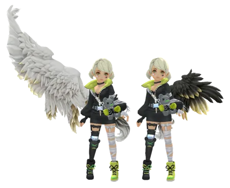
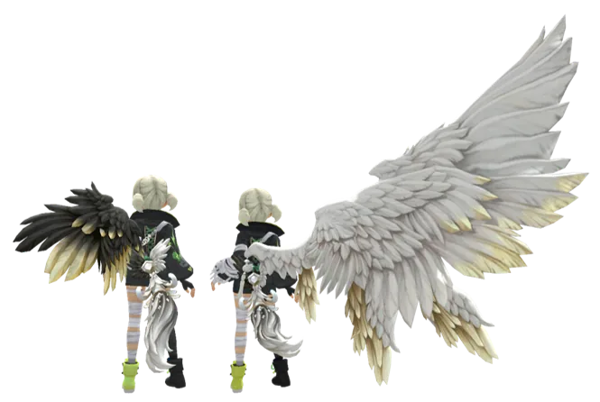
• 毛茸茸特殊防具• 복슬복슬 특수 방어구
• 玩偶特殊防具• 인형 특수 방어구
• 悲劇永恆飾品• 비극의 이터니티 액세서리
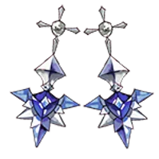
◆ 海釣◆ 바다 낚시
1. 海釣開幕！1. 바다 낚시 개장!
為了狩獵累了的勇者們，活動又回來了！！사냥에 지치신 용자님들을 위한 이벤트가 돌아왔습니다!!
這次最多釣到大魚的[海洋傳說]會是誰呢？이번에도 가장 많이 대어를 낚으신 [바다의 전설]은 누가 될까요?
[釣魚場位置資訊][낚시터 위치 정보]
神聖天堂5點鐘方向活動關卡 ▶ 神聖天堂附近海邊세인트 헤이븐 5시 방향 이벤트 스테이지 ▶ 보누스 섬 바다 낚시터
什麼是海釣？바다 낚시란?
與農場區的釣魚不同，這是僅能在活動進行時間內入場的釣魚大賽。농장 지구의 낚시와는 다르게 이벤트 진행 시간에만 입장이 가능한 낚시 대회 입니다.
1. 已學會[輔助技能]-[釣魚技能]的24等級以上勇者，可於[神聖天堂附近海邊]每個帳號進行30分鐘的海釣。1. [보조스킬]-[낚시 스킬]을 배우신 24레벨 이상 용자님께서는 [보누스 섬 바다 낚시터]에서 계정 당 30분 동안 바다 낚시를 하실 수 있습니다.
2. 在海釣場釣到的魚會累計至排名資料，釣到最多魚的第1～10名勇者可獲得排名獎勵。2. 바다 낚시터에 낚은 물고기는 랭킹 정보에 누적되며, 가장 많이 낚은 1위 ~ 10위의 용자님들께서는 랭킹 보상을 받으실 수 있습니다.
3. 排名會依賽季重新結算，獎勵將於上午9點以郵件發送。3. 시즌별로 랭킹이 새로 정산되며, 보상은 오전 9시에 우편으로 지급되게 됩니다.
• 一個賽季分為2次進行。（詳細內容請參考行程表。）• 한 시즌을 2회로 나누어져 진행됩니다. (자세한 내용은 스케쥴 표를 참고해 주세요.)
• 每個賽季每個帳號可使用30分鐘。• 1시즌에 계정당 30분 이용이 가능합니다.
[海釣進行][바다 낚시 진행]
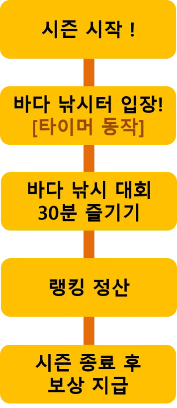
[海釣計時器][바다 낚시 타이머]
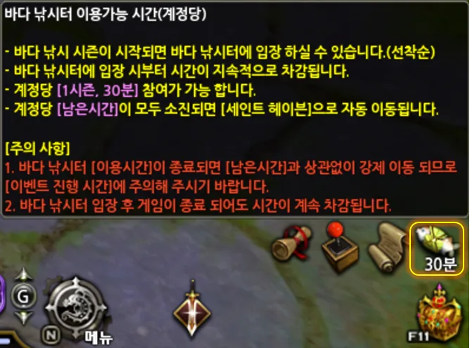
[海釣入場][바다 낚시 입장]
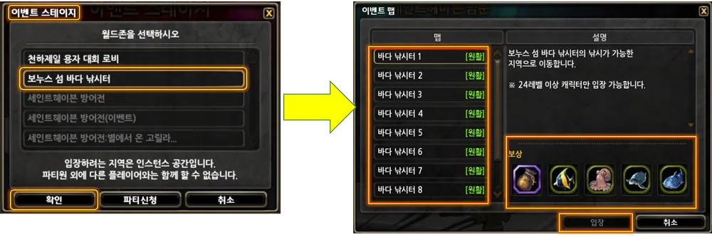
[海釣獨有的特別之處][바다 낚시만의 특별함]
• 海釣的過程中，有機會釣到超～大隻的海魚。• 바다 낚시를 하시다 보면 , 아~주 큰 바다 물고기를 낚을 수 있습니다.
• 釣到大型海魚時，會出現特別的效果。• 큰 바다 물고기를 낚았을 때에는 특별한 효과가 나타납니다.
＊ 在此稍作說明！* 여기서 잠깐!
Q：要如何得知自己本賽季釣了多少魚呢？Q : 자신이 이번 시즌에 물고기를 얼마나 낚았는지 어떻게 알죠?
A：右上角會顯示本賽季釣起的魚的大小總和。A : 오른쪽 상단에 이번 시즌에 낚아 올린 물고기 크기의 합이 표시됩니다.
• 魚的大小合計僅於一個賽季內保留，下個賽季開始時將會重置。• 물고기 크기 합산 표시는 한 시즌 동안만 유지되며 다음 시즌이 시작되면 초기화 됩니다.
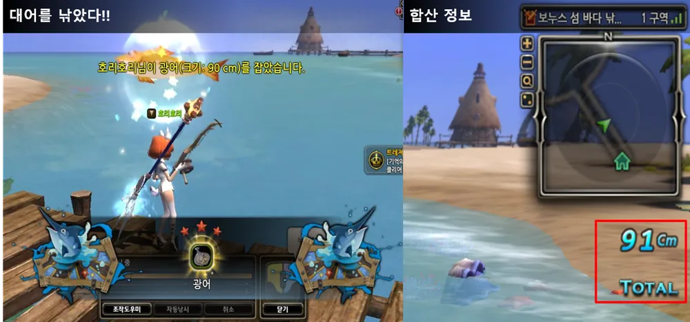
[海釣專用NPC][바다 낚시 전용 NPC]
• 位於[神聖天堂西南側]的[農場&溫泉區]前的海釣專用NPC「海釣王虎克」，可查看海釣排名資料，或購買釣魚相關道具。• [세인트 헤이븐 남서쪽]의 [농장 및 온천지구] 앞에 있는 바다 낚시 전용 NPC인 ‘낚시왕 후킹’에게 바다 낚시 랭킹 정보를 확인하거나 낚시에 관련된 도구를 구입할 수 있습니다.
[海釣排名][바다 낚시 랭킹]
• 與「海釣王虎克」NPC對話後，選擇[查看海釣排名]即可確認排名資料。• ‘낚시왕 후킹’ NPC에게 대화하기 후 [바다 낚시 랭킹 보기]를 선택하면 랭킹 정보를 확인할 수 있습니다.
• 比較[賽季]期間釣到的[魚的數量]與[合計大小]，第1名至第10名的勇者將獲得特別獎勵。• [시즌] 동안 잡은 [물고기의 수]와 [합산 크기]를 비교하여 1위 부터 10위까지의 용자님들은 특별한 보상이 지급됩니다.
釣魚所需的[釣竿]與[魚餌]也有販售，要不要趕快準備一下呢～？낚시에 필요한 [낚시대]와 [미끼]도 판매하니 재빨리 준비해 보도록 할까요~?
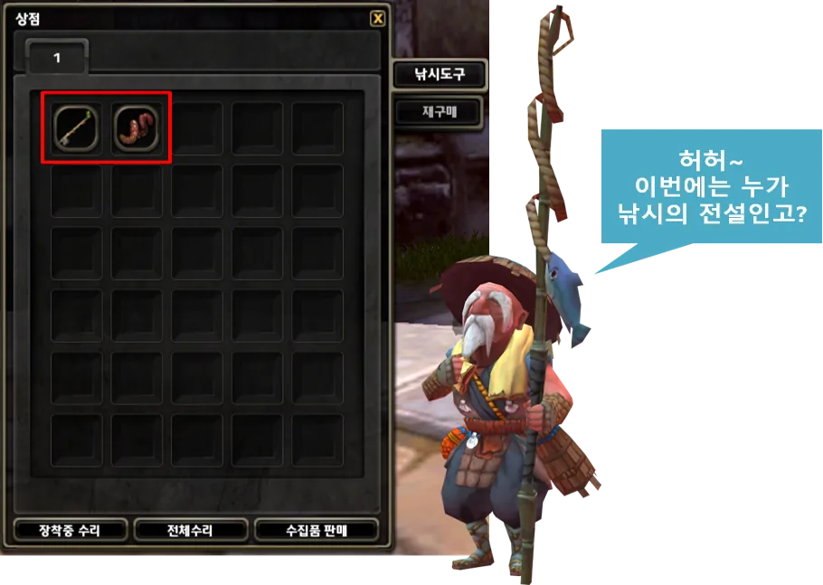
• 依回歸的海釣活動排名，可獲得以下清單中的道具。• 돌아온 바다 낚시 이벤트의 순위에 따라 다음 목록의 아이템을 습득하게 됩니다.
| 排名순위 | 獎勵보상 | 數量개수 |
|---|---|---|
| 1位1위 | 沙漠氣息花苞모래 숨결 꽃망울 | 3000 |
| 次元的石榴石차원의 잔흔 | 500 | |
| 30天期間制稱號（海洋傳說）30일 기간제 칭호(바다의 전설) | 1 | |
| 2位2위 | 沙漠氣息花苞모래 숨결 꽃망울 | 2500 |
| 次元的石榴石차원의 잔흔 | 400 | |
| 30天期間制稱號（海釣之最大魚達人）30일 기간제 칭호(바다의 월척왕) | 1 | |
| 3位3위 | 沙漠氣息花苞모래 숨결 꽃망울 | 1500 |
| 次元的石榴石차원의 잔흔 | 300 | |
| 30天期間制稱號（海釣狂熱者）30일 기간제 칭호(바다의 낚시꾼) | 1 | |
| 第4～5名4 ~ 5위 | 沙漠氣息花苞모래 숨결 꽃망울 | 1000 |
| 次元的石榴石차원의 잔흔 | 200 | |
| 30天期間制稱號（享受海釣的）30일 기간제 칭호(바다 낚시를 즐기는) | 1 | |
| 第6～10名6 ~ 10위 | 沙漠氣息花苞모래 숨결 꽃망울 | 500 |
| 次元的石榴石차원의 잔흔 | 100 | |
| 30天期間制稱號（享受海釣的）30일 기간제 칭호(바다 낚시를 즐기는) | 1 |
■ [海釣獎勵袋(7天) 內容物]■ [바다에서 건진 주머니(7일) 구성품]
• 開啟海釣獎勵袋(7天)後，會隨機獲得以下內容物其中之一。• 바다에서 건진 주머니(7일)을 개봉하면 아래의 구성품 중 하나를 랜덤으로 획득 합니다.
• 海釣獎勵袋(7天)即使未使用，7天後也會被刪除。• 바다에서 건진 주머니(7일)은 사용하지 않아도 7일 후 삭제 됩니다.
| 海釣獎勵袋(7天) 內容物바다에서 건진 주머니(7일) 구성품 |
|---|
| 高級神聖的月蝕碎片 100個상급 신성한 월식의 파편 100개 |
| 高級皎潔的月蝕碎片 100個상급 청명한 월식의 파편 100개 |
| 高級燃燒的月蝕碎片 100個상급 불타는 월식의 파편 100개 |
| 高級漆黑的月蝕碎片 100個상급 칠흑의 월식의 파편 100개 |
| 高級順風的月蝕碎片 100個상급 순풍의 월식의 파편 100개 |
| 高級堅韌的月蝕碎片 100個상급 굳건한 월식의 파편 100개 |
[行程表][스케줄]
| 進行時間진행 시간 | 11月7日（六）11월 7일 (토) | 11月8日（日）11월 8일 (일) | 11月9日（一）11월 9일 (월) | |
|---|---|---|---|---|
| 9:00 | - | [賽季 197] 發送獎勵[시즌 197] 보상 지급 | [賽季 198] 發送獎勵[시즌 198] 보상 지급 | |
| 10:00~18:00 | 8H | 海釣 [賽季 197]바다 낚시 [시즌 197] | 海釣 [賽季 198]바다 낚시 [시즌 198] | |
| 23:00~05:00 | 6H | 海釣 [賽季 197]바다 낚시 [시즌 197] | 海釣 [賽季 198]바다 낚시 [시즌 198] | |
| 進行時間진행 시간 | 11月14日（六）11월 14일 (토) | 11月15日（日）11월 15일 (일) | 11月16日（一）11월 16일 (월) | |
| 9:00 | - | [賽季 199] 發送獎勵[시즌 199] 보상 지급 | [賽季 200] 發送獎勵[시즌 200] 보상 지급 | |
| 10:00~18:00 | 8H | 海釣 [賽季 199]바다 낚시 [시즌 199] | 海釣 [賽季 200]바다 낚시 [시즌 200] | |
| 23:00~05:00 | 6H | 海釣 [賽季 199]바다 낚시 [시즌 199] | 海釣 [賽季 200]바다 낚시 [시즌 200] | |
| 進行時間진행 시간 | 11月21日（六）11월 21일 (토) | 11月22日（日）11월 22일 (일) | 11月23日（一）11월 23일 (월) | |
| 9:00 | - | [賽季 201] 發送獎勵[시즌 201] 보상 지급 | [賽季 202] 發送獎勵[시즌 202] 보상 지급 | |
| 10:00~18:00 | 8H | 海釣 [賽季 201]바다 낚시 [시즌 201] | 海釣 [賽季 202]바다 낚시 [시즌 202] | |
| 23:00~05:00 | 6H | 海釣 [賽季 201]바다 낚시 [시즌 201] | 海釣 [賽季 202]바다 낚시 [시즌 202] | |
| 進行時間진행 시간 | 11月28日（六）11월 28일 (토) | 11月29日（日）11월 29일 (일) | 11月30日（一）11월 30일 (월) | |
| 9:00 | - | [賽季 203] 發送獎勵[시즌 203] 보상 지급 | [賽季 204] 發送獎勵[시즌 204] 보상 지급 | |
| 10:00~18:00 | 8H | 海釣 [賽季 203]바다 낚시 [시즌 203] | 海釣 [賽季 204]바다 낚시 [시즌 204] | |
| 23:00~05:00 | 6H | 海釣 [賽季 203]바다 낚시 [시즌 203] | 海釣 [賽季 204]바다 낚시 [시즌 204] | |
| 進行時間진행 시간 | 12月5日（六）12월 5일 (토) | 12月6日（日）12월 6일 (일) | 12月7日（一）12월 7일 (월) | |
| 9:00 | - | [賽季 205] 發送獎勵[시즌 205] 보상 지급 | [賽季 206] 發送獎勵[시즌 206] 보상 지급 | |
| 10:00~18:00 | 8H | 海釣 [賽季 205]바다 낚시 [시즌 205] | 海釣 [賽季 206]바다 낚시 [시즌 206] | |
| 23:00~05:00 | 6H | 海釣 [賽季 205]바다 낚시 [시즌 205] | 海釣 [賽季 206]바다 낚시 [시즌 206] | |
◆ 落葉紛飛特別任務◆ 낙엽 부는 특별 미션
• 活動期間：11月更新維護後 ～ 12月更新維護前• 이벤트 기간: 11월 업데이트 점검 후 ~ 12월 업데이트 점검 전까지
• 活動參加方式：點擊右下角的活動按鈕後進行任務• 이벤트 참여 방법: 우측 하단의 이벤트 버튼 클릭 후 미션 진행
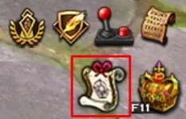
• 獎勵領取條件：活動期間內透過活動專屬任務即可領取獎勵• 보상 수령 조건: 이벤트 기간 내 이벤트 전용 미션을 통해 보상 수령 가능
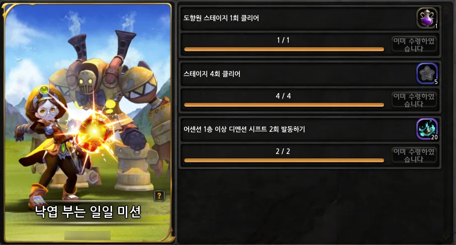
• 活動獎勵說明• 이벤트 보상 안내
| 每日任務일일 미션 | 每日任務獎勵일일 미션 보상 |
|---|---|
| 通關稻香苑關卡1次도향원 스테이지 1회 클리어 | [GM] 潘朵拉活力恢復藥水袋子 (7天) 1個[GM] 판도라의 활력 회복약 주머니 (7일) 1개 |
| 通關關卡4次스테이지 4회 클리어 | 失去光芒的摯友星 5個빛을 잃은 단짝별 5개 |
| 於昇天神域1樓以上發動維度轉移2次어센션 1층 이상 디멘션 시프트 2회 발동하기 | 碎裂的胸針殘骸 20個조각난 브로치 잔해 20개 |
| 每週任務주간 미션 | 每週任務獎勵주간 미션 보상 |
| 通關分裂迷宮1次분열된 미로 1회 클리어 | 凝結的侵蝕碎片 10個응축된 침식의 조각 10개 |
| 完成每週委託4個주간 의뢰 4개 완료 | 古代人的圖紙 20個고대인의 도면 20개 |
| 通關一般巢穴2次일반 네스트 2회 클리어 | 扎根盼望的碎片 30個뿌리 깊은 갈망의 파편 30개 |
• 活動注意事項說明• 이벤트 유의사항 안내
• 每日任務於每天上午9點重置，可參加至隔天上午8點59分。• 일일 미션은 매일 오전 9시 초기화 ~ 익일 오전 8시 59분까지 참여가 가능합니다.
• 每週任務於每週六上午9點重置，可參加至下週六上午8點59分。• 주간 미션은 매주 토요일 오전 9시 초기화 ~ 차주 토요일 오전 8시 59분까지 참여가 가능합니다.
• 限定任務於活動期間內可參加1次。• 한정 미션은 이벤트 기간 내 1회 참여가 가능합니다.
• 所有任務皆以帳號為單位參與，活動獎勵將即時發送至道具欄。• 모든 미션은 계정 단위로 참여가 가능하며, 이벤트 보상은 소지품으로 즉시 지급됩니다.
◆ 活動結束◆ 이벤트 종료
• 受污染的方舟之氣息已改為蒐集品。• 오염된 방주의 기운이 수집품화 되었습니다.
• 受污染的方舟之氣息商店已移除。• 오염된 방주의 기운 상점이 제거되었습니다.
• 下列道具將不再掉落。• 하단의 아이템이 더 이상 드랍되지 않습니다.
• 幽靈糖果• 유령 사탕
• 滿滿愛意翅膀箱• 사랑 듬뿍 날개 상자
• 稱號：夜間巡邏者• 칭호 : 야간 순찰자
• 稱號：黎明討伐者• 칭호 : 새벽 토벌자
◆ 其他◆ 기타
• 每日任務獎勵中的哈洛麗日落慶典門票將被移除。• 일일 임무 보상에서 하로리 선셋 페스타 입장권이 제거됩니다.
購物商城便利性改善캐시샵 편의성 개선
◆ 購物商城商品清單變更◆ 캐시샵 상품 리스트 변경
• 新增數量選擇功能• 수량 선택 기능 추가
• 改善了商品依販售數量個別顯示的問題，部分商品新增可選擇數量的功能。• 판매 수량에 따라 상품이 개별로 노출되던 문제를 개선하여 일부 상품에 수량 선택 가능한 기능이 추가되었습니다.
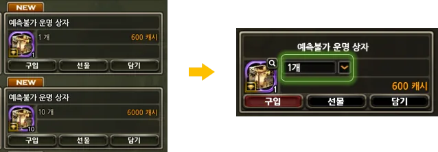
• 折扣商品標示• 할인 상품 표시
• 折扣中的商品在選擇數量時，會以綠色的「數量★」標示。• 할인 중인 상품은 수량 선택 시 초록 색상의 ‘수량★’ 로 표시됩니다.
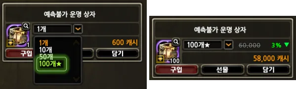
◆ 內容物及機率資訊◆ 구성품 및 확률 정보
• 新增放大鏡按鈕，可確認禮盒商品、機率型商品的內容物、伺服器倉庫、交易及機率資訊。• 패키지 상품, 확률성 상품의 구성품, 서버 창고, 거래, 확률 정보를 확인할 수 있도록 돋보기 버튼이 추가되었습니다.
• 需要封印的道具，將以封印前的狀態為基準顯示資訊。• 봉인이 필요한 아이템은 봉인 전 상태를 기준으로 정보가 표시됩니다.
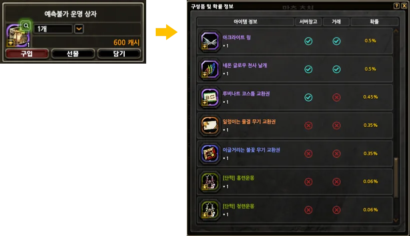
◆ 內容物及機率資訊 - 預覽◆ 구성품 및 확률 정보 - 미리보기
• 時裝、兌換券類道具點擊圖示後，可於右側預覽畫面確認外觀。（部分武器時裝需裝備一般裝備才會顯示於預覽中。）• 코스튬, 교환권류 아이템은 아이콘 클릭 시 우측 미리보기 화면에서 외형을 확인할 수 있습니다. (일부 무기 코스튬은 일반 장비를 장착해야 미리보기에 노출됩니다.)
• 可預覽的道具：防具、特殊防具、飾品、武器時裝、坐騎、精靈、寵物、武器兌換券等• 미리보기 가능 아이템 : 방어구, 특수 방어구, 악세서리, 무기 코스튬, 탈 것, 정령, 펫, 무기 교환권 등
• 點擊兌換券類道具時，預覽中新增可選擇職業的功能。• 교환권류 클릭 시 미리보기에 직업 선택을 할 수 있는 기능이 추가됩니다.
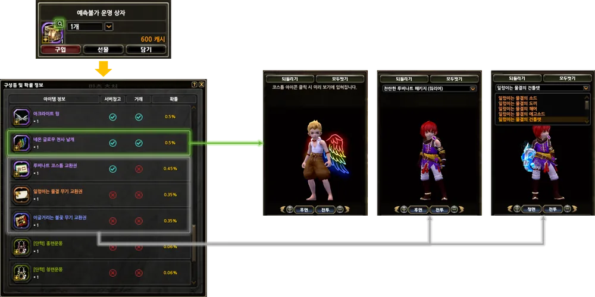
◆ 結帳視窗變更◆ 결제창 변경
• 點擊購買按鈕時顯示的結帳視窗已變更。• 구입 버튼 클릭 시 노출되는 결제 창이 변경되었습니다.
• 可於結帳視窗右側確認禮盒類、機率型商品的道具資訊。• 결제창 우측에서 패키지류, 확률성 상품의 아이템 정보를 확인할 수 있습니다.
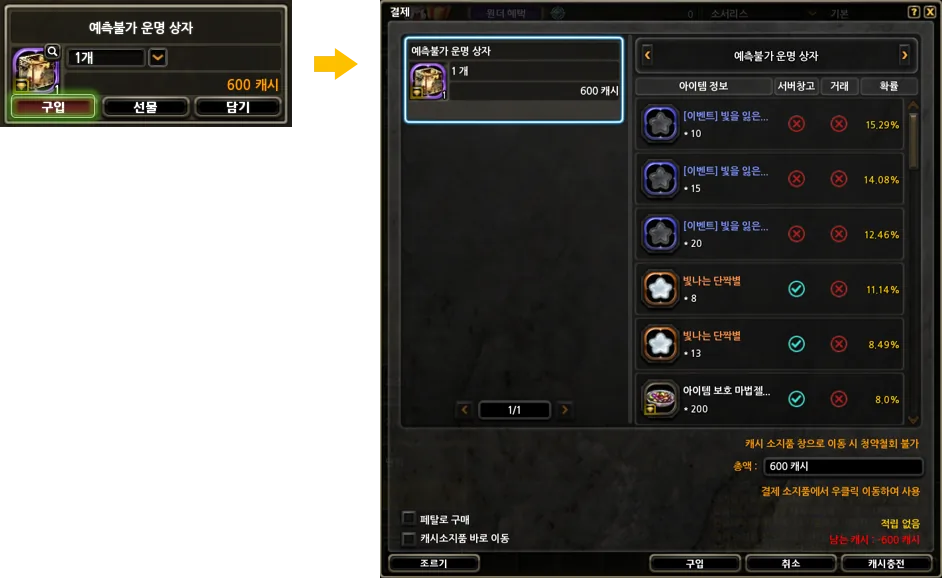
• 欲購買多項商品時，可於左側清單選擇道具，並在右側確認內容物及資訊。• 여러 상품을 구매하고자 할 때, 좌측 목록에서 아이템을 선택하여 우측에서 구성품 및 정보를 확인할 수 있습니다.
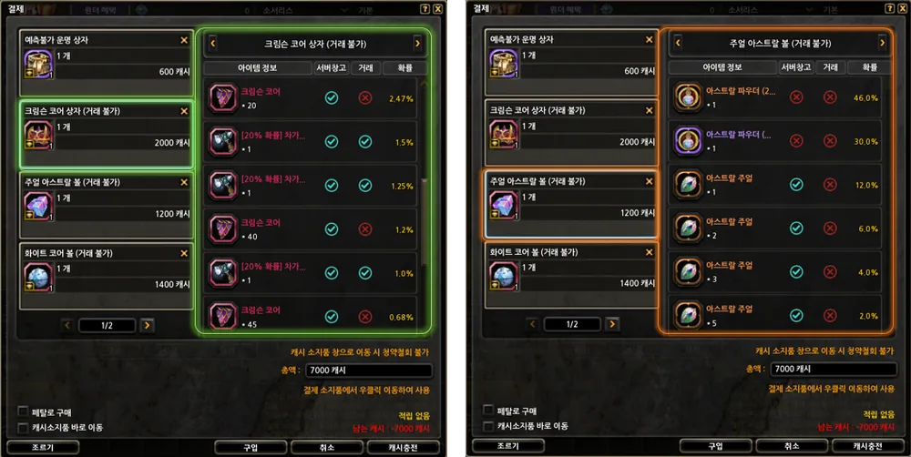
• 在結帳視窗右側的道具清單中，點擊時裝類、兌換券類道具圖示，即可於右側預覽中確認外觀。• 결제창 우측의 아이템 목록에서 코스튬류, 교환권류 아이템 아이콘 클릭 시 우측 미리보기에서 외형을 확인할 수 있습니다.
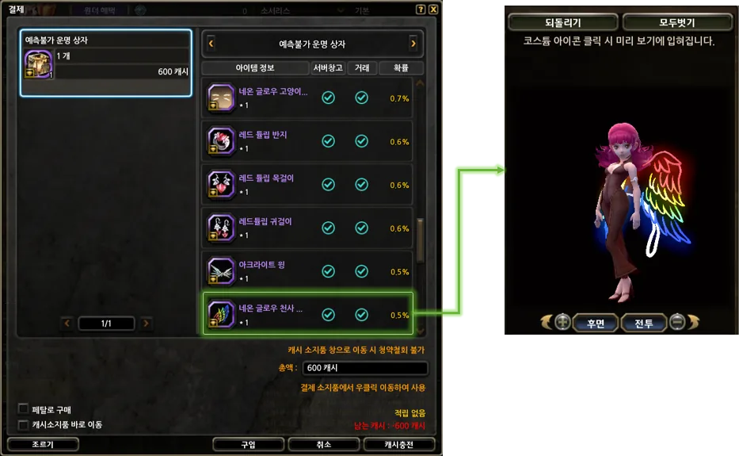
◆ 購物商城每日獎勵◆ 캐시샵 일일 보상
• 進入購物商城後，可每天從左上角的莉莉獲得1次免費獎勵。（重置時間為00:00。）• 캐시샵 진입 후 좌측 상단 릴리로부터 매일 1회 무료 보상을 획득할 수 있습니다. (초기화 시간은 00:00입니다.)
• 為了獲得獎勵，道具欄需至少有1格以上的空位。• 보상 획득을 위해 인벤토리는 1칸 이상의 빈 슬롯이 존재해야 합니다.
• 成功獲得獎勵時，將發送至道具欄。• 보상 획득 성공 시 인벤토리로 지급됩니다.
◆ 購物商城客製化推薦◆ 캐시샵 맞춤 추천
• 原本顯示購物商城商品橫幅的區域，已變更為客製化推薦區域。• 기존 캐시샵 상품 배너가 노출되던 영역이 맞춤 추천 영역으로 변경되었습니다.
• 點擊客製化推薦中的道具圖示時，同樣可於右側預覽確認外觀。• 맞춤 추천의 아이템 아이콘 클릭 시에도 우측 미리보기에서 외형 확인이 가능합니다.
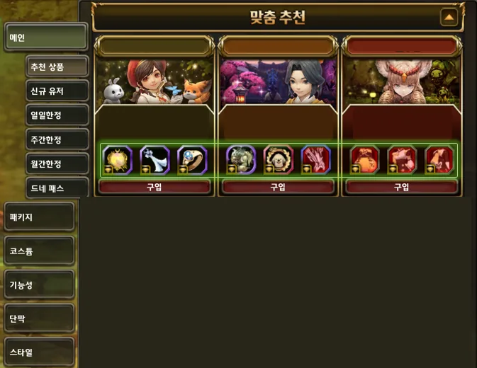
◆ 購物商城其他事項◆ 캐시샵 기타 사항
• 無論遊戲內解析度及介面大小為何，購物商城的介面大小一律固定。• 게임 내 해상도 및 UI 크기와 상관없이 캐시샵 UI 크기가 상시 고정됩니다.
• 搜尋商品時，包含搜尋對象道具的禮盒商品、機率型商品也會一併顯示。• 상품 검색 시 검색 대상 아이템이 포함되어 있는 패키지 상품, 확률성 상품도 노출됩니다.
• 購物商城中原本選為「所有職業」的職業欄位，將變更為配合自己角色的職業。• 캐시샵 내 ‘모든 직업＇으로 선택되던 직업 부분이 본인의 캐릭터 직업에 맞게 변경됩니다.
• 篩選器中原有的「所有職業」項目將被移除。• 필터에 존재하던 ‘모든 직업‘ 항목은 제거됩니다.
• 購物商城內販售的部分商品，變更為購買時可一次全部開啟。• 캐시샵 내 판매 중인 일부 상품이 구매 시 한 번에 열기가 가능하도록 변경되었습니다.
• （一次最多可開啟100個。）• (한 번에 최대 100개 수량까지 열기 가능합니다.)
商城道具캐시아이템
飛行員時裝 / 無法預測命運的箱子 / 結緣更新 / 購物商城相關事項
◆ 飛行員時裝◆ 파일럿 코스튬
• 販售位置：<時裝-本月時裝>• 판매 위치 : <코스튬-이달의 코스튬>
• 禮盒種類：3種• 패키지 종류 : 3종
• 是否包含武器：包含• 무기 포함 여부 : 포함
• 販售等級：稀有• 판매 등급 : 레어
• 販售價格：8,900 G幣• 판매 가격 : 8,900캐시
• 販售期限：11月更新維護後 ～ 另行公告為止• 판매 기한 : 11월 업데이트 점검 후 ~ 별도 공지 시까지
• 不單獨販售單品。• 단품은 따로 판매하지 않습니다.
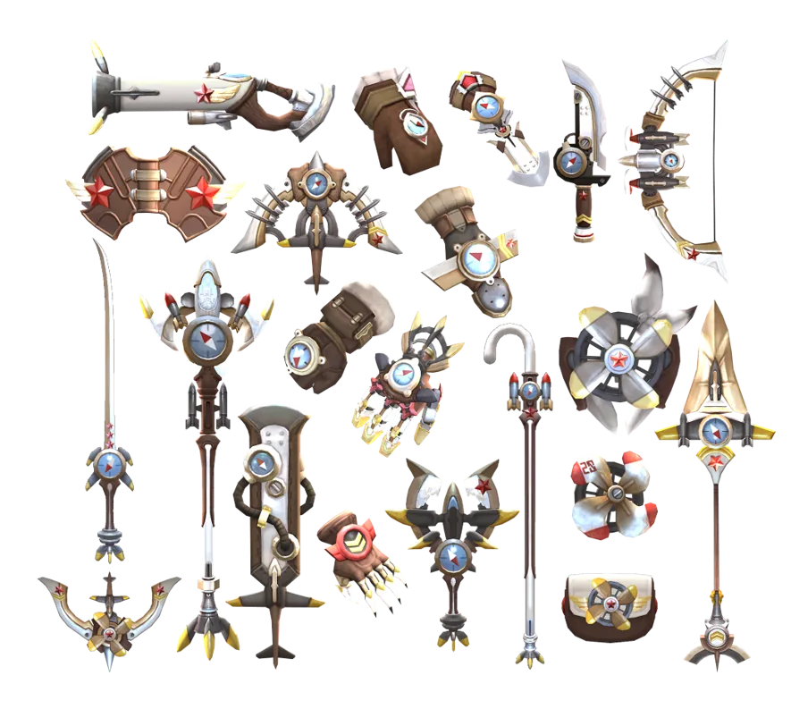
◆ 無法預測命運的箱子◆ 예측불가 운명 상자
• 無法預測命運的箱子 內容物變更說明• 예측불가 운명 상자 구성품 변경 안내
| 移除제거 | 新增신규 |
|---|---|
| 雪月九尾狐翅膀설월 구미호 날개 | 弧光翅膀아크라이트 윙 |
| 雪月九尾狐尾巴설월 구미호 꼬리 | 弧光尾翼아크라이트 테일 |
| 九尾狐刺青구미호 데칼 | 弧光飾品아크라이트 데칼 |
| 烈日千陽翅膀강렬히 불타오르는 날개 | 霓虹燈天使翅膀네온 글로우 천사 날개 |
| 烈日千陽尾巴강렬히 불타오르는 꼬리 | 霓虹燈貓尾巴네온 글로우 고양이 꼬리 |
| 烈日千陽刺青강렬히 불타오르는 데칼 | 霓虹燈貓鬍鬚네온 글로우 고양이 수염 |
• 依據韓國《遊戲產業振興法》，公開的機率為四捨五入（或無條件捨去）後的數值，總和可能不等於100%。• 공개된 확률은 게임산업진흥에 관한 법률에 따라 반올림 (또는 내림)한 값으로 총 합산이 100%가 아닐 수 있습니다.
[無法預測命運的箱子 資訊][예측불가 운명 상자 정보]
| 品項품목 | 數量수량 | 機率확률 |
|---|---|---|
| [摯友] 血焰軍刀[단짝] 블러드플레어 세이버 | 1 | 0.02% |
| [閨蜜] 紅蓮雲夢[단짝] 홍련운몽 | 1 | 0.06% |
| [閨蜜] 青蓮雲夢[단짝] 청련운몽 | 1 | 0.06% |
| [摯友] 無龍[단짝] 무룡이 | 1 | 0.80% |
| [閨蜜] 小女僕 薇菲[단짝] 하녀장 위피 | 1 | 0.95% |
| 混沌鬱金香戒指레드 튤립 반지 | 1 | 0.60% |
| 混沌鬱金香項鍊레드 튤립 목걸이 | 1 | 0.60% |
| 混沌鬱金香耳環레드튤립 귀걸이 | 1 | 0.60% |
| 弧光翅膀아크라이트 윙 | 1 | 0.50% |
| 弧光尾翼아크라이트 테일 | 1 | 0.70% |
| 弧光飾品아크라이트 데칼 | 1 | 0.70% |
| 霓虹燈天使翅膀네온 글로우 천사 날개 | 1 | 0.50% |
| 霓虹燈貓尾巴네온 글로우 고양이 꼬리 | 1 | 0.70% |
| 霓虹燈貓鬍鬚네온 글로우 고양이 수염 | 1 | 0.70% |
| 水波蕩漾武器兌換券일렁이는 물결 무기 교환권 | 1 | 0.35% |
| 熊熊燃燒的火花武器兌換劵이글거리는 불꽃 무기 교환권 | 1 | 0.35% |
| 露比那特時裝兌換券루비나트 코스튬 교환권 | 1 | 0.45% |
| [活動] 失去光芒的摯友星[이벤트] 빛을 잃은 단짝별 | 10 | 15.29% |
| [活動] 失去光芒的摯友星[이벤트] 빛을 잃은 단짝별 | 15 | 14.09% |
| [活動] 失去光芒的摯友星[이벤트] 빛을 잃은 단짝별 | 20 | 12.46% |
| 發光的摯友星빛나는 단짝별 | 8 | 11.14% |
| 發光的摯友星빛나는 단짝별 | 13 | 8.49% |
| [活動] 彩虹星[이벤트] 무지개별 | 1 | 3.55% |
| [活動] 彩虹星[이벤트] 무지개별 | 2 | 2.25% |
| 保護道具魔法果凍아이템 보호 마법젤리 | 200 | 8.00% |
| 保護道具魔法果凍아이템 보호 마법젤리 | 500 | 6.00% |
| 胸針鉤環브로치 고리 | 1 | 5.80% |
| 胸針鉤環브로치 고리 | 2 | 3.25% |
| 艾奥娜飾品選擇箱子아이오나 악세서리 선택 상자 | 1 | 0.002% |
| 金光誓言금빛 서약 | 1 | 1.00% |
| 受到祝福的金光戰甲축복받은 금빛 플레이트 | 1 | 0.04% |
• 阿克萊特特殊防具• 아크라이트 특수 방어구
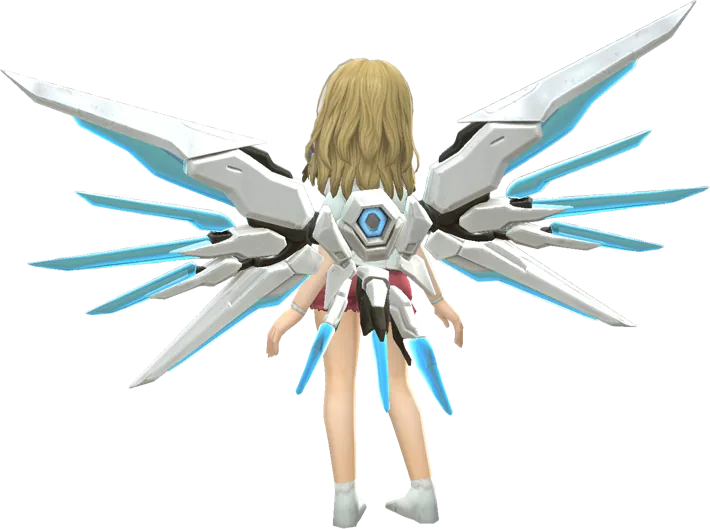
• 霓虹光輝特殊防具• 네온 글로우 특수 방어구
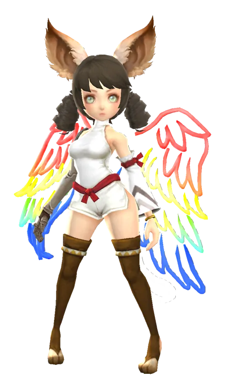
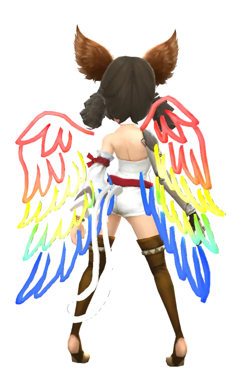
◆ 無法預測命運的箱子 更新紀念消費活動◆ 예측불가 운명 상자 업데이트 기념 소비 이벤트
• 活動期間：11月更新維護後 ～ 12月更新維護前• 이벤트 기간: 11월 업데이트 점검 후 ~ 12월 업데이트 점검 전까지
• 活動參加方式：依[無法預測命運的箱子]的使用數量，即可獲得額外獎勵！• 이벤트 참여 방법: [예측불가 운명 상자] 사용 개수에 따라 추가 보상을 획득할 수 있습니다!
• 獎勵領取條件：活動期間內透過活動專屬任務即可領取獎勵• 보상 수령 조건: 이벤트 기간 내 이벤트 전용 미션을 통해 보상 수령 가능
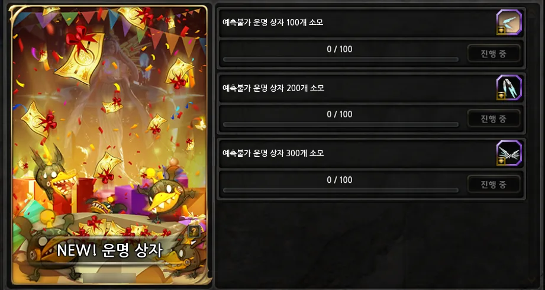
• 活動獎勵說明• 이벤트 보상 안내
| 任務清單미션 목록 | 獎勵보상 |
|---|---|
| 消耗無法預測命運的箱子 100個예측불가 운명 상자 100개 소모 | 弧光飾品아크라이트 데칼 |
| 消耗無法預測命運的箱子 200個예측불가 운명 상자 200개 소모 | 弧光尾翼아크라이트 테일 |
| 消耗無法預測命運的箱子 300個예측불가 운명 상자 300개 소모 | 弧光翅膀아크라이트 윙 |
• 活動注意事項說明• 이벤트 유의사항 안내
• 該活動以世界為單位適用，期間內僅可達成1次。• 해당 이벤트는 월드 단위로 적용되며, 기간 내 1회만 달성할 수 있습니다.
• [阿克萊特特殊防具] 道具可使用伺服器倉庫。• [아크라이트 특수 방어구 ] 아이템은 서버 창고 이용이 가능합니다.
◆ 結緣更新◆ 인연 맺기 업데이트
<Pick Up! 變更><Pick Up! 변경>
• 進行傳奇等級結緣時，較容易遇到的寵物已變更。• 레전드 등급의 인연 맺기 시, 보다 만나기 쉬운 펫이 변경됩니다.
• 更新後至下次更換前，可透過Pick Up獲得[自動跟隨行李箱]外觀。• 업데이트 이후부터 다음 교체 시까지 [바리바리] 외형을 Pick Up으로 획득 할 수 있습니다.
• 依據韓國《遊戲產業振興法》，公開的機率為四捨五入（或無條件捨去）後的數值，總和可能不等於100%。• 공개된 확률은 게임산업진흥에 관한 법률에 따라 반올림 (또는 내림)한 값으로 총 합산이 100%가 아닐 수 있습니다.
• 進行傳奇等級結緣時的寵物獲得機率資訊 – 寵物外觀• 레전드 등급 인연 맺기 진행 시 펫 획득 확률 정보 – 펫 외형
• 此機率為獲得寵物時適用的外觀機率。• 해당 확률은 펫 획득 시에 적용되는 외형 확률입니다.
| 名稱이름 | 機率확률 | 備註비고 |
|---|---|---|
| 鋼鐵機器人강철의 레트로보 | 1.2000% | |
| 潔白的雪花豹새하얀 눈꽃표범 | 1.2000% | |
| 月光之傳奇萊昂달빛의 전설 레옹 | 1.2000% | |
| 愛擔心的刺蝟아등바등 도치 | 1.2000% | - |
| 巨大巴風特왕 무서운 앙마 | 1.2000% | - |
| 小福星娜可露복덩이 카우나 | 1.2000% | - |
| 蔓駝蘿맨드라 | 1.2000% | - |
| 小不點死靈術士꼬마 사령술사 | 1.2000% | - |
| 優雅修道士 傑米瑞고요한 수도사 제레미 | 1.2000% | - |
| 黑虎寶寶아기 흑호 | 1.2000% | - |
| 小龐미니콩 | 1.2000% | - |
| 萊特里레트리 | 1.2000% | - |
| 可愛的蕾西깜찍한 레시 | 1.2000% | - |
| 獅蠍寶寶만티코어 주니어 | 1.2000% | - |
| 黑米蒸糕흑설기 | 1.2000% | - |
| 呱呱蛙깨꼬 | 1.2000% | - |
| 自動跟隨行李箱바리바리 | 70.0000% | Pick Up! |
| 勇猛的拉口용맹한 라코 | 1.2000% | - |
| QQ彈彈海波咪말랑말랑 물뽀미 | 1.2000% | - |
| 搖滾貓王로큰롤 엘비스 | 1.2000% | - |
| 飄飄欲仙露露둥실둥실 루루 | 1.2000% | - |
| 超級明星哈洛麗슈퍼스타 하로리 | 1.2000% | |
| 威風凜凜小雞軍團위풍당당 병아리단 | 1.2000% | - |
| 威風小馬兒마이티 포니 | 1.2000% | - |
| 悠閒的普雷多느긋한 프레도 | 1.2000% | - |
| Q彈布丁탱글탱글 푸딩 | 1.2000% | - |
• 進行傳奇等級結緣時的寵物獲得機率資訊 – 寵物能力值• 레전드 등급 인연 맺기 진행 시 펫 획득 확률 정보 – 펫 능력치
• 擁有[命運：穩定/從容/開朗/意志/信賴]能力值的寵物，可透過交易所交易4次。• [운명 : 안정/여유/명랑/의지/신뢰] 능력치를 가진 펫은 거래소를 통하여 4회 거래가 가능합니다.
| 區分구분 | 機率확률 | 備註비고 |
|---|---|---|
| [初見][첫만남] | 15.6668% | - |
| [初見][첫만남] | 12.8183% | - |
| [初見][첫만남] | 10.4445% | - |
| [初見][첫만남] | 7.5960% | - |
| [緣分][인연] | 7.4916% | - |
| [緣分][인연] | 5.9629% | - |
| [緣分][인연] | 5.3932% | - |
| [緣分][인연] | 5.1273% | - |
| [朋友][친구] | 3.9879% | - |
| [朋友][친구] | 3.7980% | - |
| [朋友][친구] | 3.6081% | - |
| [朋友][친구] | 3.3233% | - |
| [摯友][절친] | 3.0384% | - |
| [摯友][절친] | 2.7536% | - |
| [摯友][절친] | 1.9940% | - |
| [摯友][절친] | 1.8041% | - |
| [命運][운명] | 0.1424% | - |
| [命運：穩定][운명 : 안정] | 0.0038% | - |
| [命運：從容][운명 : 여유] | 0.0038% | - |
| [命運：開朗][운명 : 명랑] | 0.0038% | - |
| [命運：意志][운명 : 의지] | 0.0038% | - |
| [命運：信賴][운명 : 신뢰] | 0.0350% | Pick Up ! |
| 寵物飾品選擇箱子펫 악세서리 선택 상자 | 4.0000% | - |
| 怦怦寵物飾品選擇箱子두근두근 펫 악세서리 선택 상자 | 1.0000% | - |
◆ 購物商城相關事項◆ 캐시샵 관련 사항
[新增商品][상품 추가]
• 禮盒 > 龍玉商品分頁中，新增「永恆的變異型龍玉進化器」商品。• 패키지 > 용옥 상품 탭에 ‘영원한 변이형 용옥 진화기‘ 상품이 추가되었습니다.
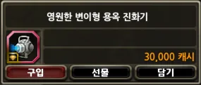
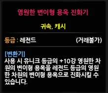
[停售][판매 종료]
| 商品名稱상품명 |
|---|
| [超特價] 杰倫特的成長挑戰箱子[초특가] 제레인트의 성장 도전 상자 |
| [超特價] 精製鋼筆(無法交易)袋子[초특가] 정제의 만년필(거래불가) 주머니 |
| 回歸的星之粉末球 (不可交易)돌아온 아스트랄 파우더 볼 (거래 불가) |
| 無瑕之核袋子 (10個)무결의 핵 주머니 (10개) |
| 扎根盼望的碎片500個袋子뿌리 깊은 갈망의 파편 500개 주머니 |
| 扭曲的根100個袋子 (2個)뒤틀린 뿌리 100개 주머니 (2개) |
| 神秘的幻想方塊 1個 / 10個 / 100個신비한 환상 큐브 1개 / 10개 / 100개 |
| 嘉年華飾品龍玉禮盒카니발 악세서리 용옥 패키지 |
| 嘉年華胸針禮盒카니발 브로치 패키지 |
[販售分頁移動][판매 탭 이동]
| 商品名稱상품명 | 變更前기존 | 變更변경 |
|---|---|---|
| 珠寶星之球(不可交易) 1個 / 11個주얼 아스트랄 볼 (거래 불가) 1개 / 11개 | 主頁 > 推薦商品메인 > 추천 상품 | 禮盒 > 轉換商品패키지 > 변환 상품 |
| 悖論邊界箱子 1個 / 10個 / 100個패러독스의 경계 상자 1개 / 10개 / 100개 | 主頁 > 推薦商品메인 > 추천 상품 | 禮盒 > 隨機禮盒패키지 > 랜덤 패키지 |
錯誤修正事項오류 수정 사항
◆ 內容◆ 컨텐츠
▶ 修正了染血的根部之乾涸的詛咒、腐敗的劇毒減益效果圖示的說明文字。▶ 붉게 물든 뿌리굴의 메마름의 저주, 부패의 맹독 디버프 아이콘 설명 텍스트가 수정되었습니다.
▶ 修正了通關方舟墜落地點關卡時，無法獲得次元經驗值的現象。▶ 방주 추락 지점 스테이지 클리어 시 차원 경험치가 획득되지 않던 현상이 수정되었습니다.
▶ 修正了夕陽迴廊：銀光藤蔓森林中，未套用希望之花復活設定的現象。▶ 낙조의 회랑 : 은빛넝쿨의 숲 에서 희망의 꽃 부활 설정이 적용되지 않던 현상이 수정되었습니다.
◆ 技能◆ 스킬
▶ 修正了縱雷機師夢幻龍玉的提示說明所標示的攻擊力高於實際攻擊力的現象。▶ 레이메카닉 몽환의 용옥 툴팁이 실제 공격력 보다 높게 기재된 현상이 수정되었습니다.
- 攻擊力：[進化] 原子翼刀的250% → 攻擊力：[進化] 原子翼刀的160%- 공격력 : [진] 아토믹 블레이드의 250% → 공격력 : [진] 아토믹 블레이드의 160%
▶ 修正了幻魔槍騎夢幻龍玉的提示說明所標示的攻擊力高於實際攻擊力的現象。▶ 스팅브리저 몽환의 용옥 툴팁이 실제 공격력 보다 높게 기재된 현상이 수정되었습니다.
- 攻擊力：凌空投擲 EX的550% → 攻擊力：凌空投擲 EX的220%- 공격력 : 피어싱 스파이크 EX의 550%→ 공격력 : 피어싱 스파이크 EX의 220%
▶ 修正了卡牌戲法師次元龍玉+12強化的最終傷害增加數值與提示說明不符的現象。▶ 링마스터 차원의 용옥 +12강 파이널데미지 증가 수치가 툴팁과 상이하던 현상이 수정되었습니다.
◆ 系統◆ 시스템
▶ 修正了透過角色互動查看時，在特定分頁中未顯示角色暱稱的現象。▶ 캐릭터 상호작용으로 살펴보기 시 특정 탭에서 캐릭터 닉네임이 표시되지 않는 현상이 수정되었습니다.
▶ 改善排名留言版的職業篩選與排名清單，使滑鼠游標所在的區域才會以滾輪捲動。▶ 랭킹 게시판의 직업 필터와 랭킹 리스트에서 마우스 커서가 위치한 영역만 휠 스크롤되도록 개선됩니다.
▶ 修正了角色資訊 - 技能強化龍玉分頁中，依古代龍玉強化階段顯示的最終傷害數值與提示說明不同的現象。▶ 캐릭터 정보 - 스킬강화용옥 탭에서 고대의 용옥 강화 단계에 따라 파이널 데미지 표기 수치가 툴팁과 다르게 노출되던 현상이 수정되었습니다.
▶ 修正了部分次元等級中，屬性攻擊力小數點%標示錯誤的現象。▶ 일부 차원 레벨에서 속성 공격력의 소수점 % 표기가 잘못 나오던 현상이 수정되었습니다.
◆ 道具◆ 아이템
▶ 修正了露比那特的誓言、露比那特的意志、露比那特的權能 3種飾品無法使用特殊倉庫的現象。▶ 루비나트의 맹세, 루비나트의 의지, 루비나트의 권능 악세서리 3종 특별창고 이용 불가능하던 현상이 수정되었습니다.
▶ 修正了部分職業（謫仙使、悖論戰士）的技能龍玉無法使用無瑕之鐵鎚的現象。▶ 일부 직업(성휘무제, 패러독스워리어)의 스킬 용옥에 무결의 망치 사용이 불가한 현상이 수정되었습니다.
◆ 任務◆ 퀘스트
▶ 修正了悖論戰士「教學：戰鬥修復」任務接受畫面中，文字重疊顯示的現象。▶ 패러독스 워리어 '튜토리얼: 전투 복구' 퀘스트 수락 화면에서 텍스트가 겹쳐서 노출되던 현상이 수정되었습니다.
▶ 修正了悖論戰士「教學：戰鬥修復」任務中，選擇特定選項時無法進行下一步驟的現象。▶ 패러독스 워리어 '튜토리얼: 전투 복구' 퀘스트에서 특정 선택지를 선택하는 경우 다음 스텝 진행 불가능하던 현상이 수정되었습니다.
▶ 修正了以透過編年史完成轉職的卡莉角色進入利伯偉特停泊處時，仍可接受「[轉職] 力量的主人」任務的現象。▶ 크로니클을 통해 전직을 완료한 칼리 캐릭터로 리버워트 선착장에 입장 시 '[전직] 힘의 주인' 퀘스트 수락 가능하던 현상이 수정되었습니다.
◆ 圖像◆ 그래픽
▶ 修正了DX11環境下，「粉嫩皇室翅膀」部分特效顯示異常的現象。▶ DX11 환경에서 '선홍빛 황실 날개' 이펙트 일부가 비정상적으로 노출되던 현상이 수정되었습니다.
▶ 修正了啟用DOF選項的狀態下，魔法師「飛行員法杖」外觀變得模糊的現象。▶ DOF 옵션 활성화 상태에서 소서리스 '파일럿 스태프 외형이 뿌옇게 흐려지던 현상이 수정되었습니다.
▶ 修正了瑪奇娜、機甲蘿莉僅穿著「幽靈時裝」服裝部分時，頸部出現縫隙的現象。▶ 마키나, 아카데믹이 '유령 코스튬' 의상 부분만 착용 시 목 부분에 빈틈이 발생하던 현상이 수정되었습니다.
▶ 修正了機甲蘿莉「青檸莓果花園喀巴拉」時裝的攻擊特效未顯示的現象。▶ 아카데믹 '라임베리 가든 카발라' 코스튬의 공격 이펙트가 노출되지 않던 현상이 수정되었습니다.